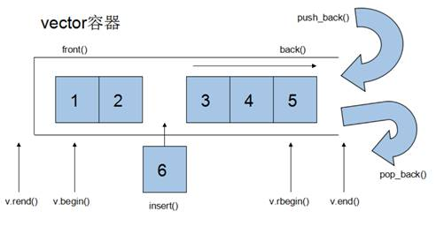
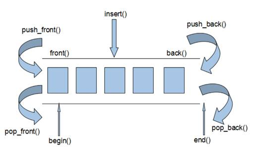
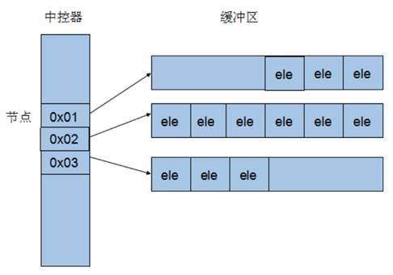
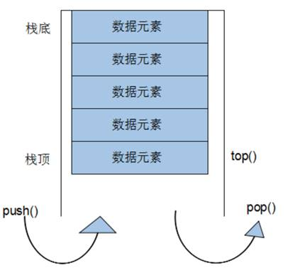
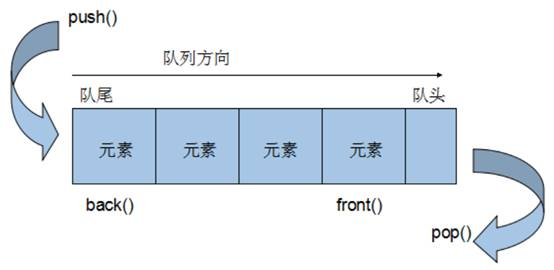
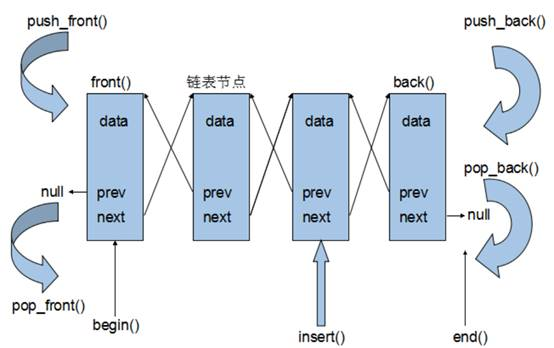

CONTENT OUTLINE C++ 提高编程
一、C++ 模板 1、模板的概念 模板就是建立通用的模具 ，大大提高复用性
模板的特点：
模板不可以直接使用，它只是一个框架 模板的通用并不是万能的 2、函数模板 C++另一种编程思想称为 泛型编程 ，主要利用的技术就是模板 2.1 函数模板语法 函数模板作用：
建立一个通用函数，其函数返回值类型和形参类型可以不具体制定，用一个虚拟的类型 来代表。
语法：
1 2 template <typename T>函数声明或定义
解释：
template — 声明创建模板
typename — 表面其后面的符号是一种数据类型，可以用class代替
T — 通用的数据类型，名称可以替换，通常为大写字母
作用：告诉编译器，后面代码中紧跟着的T不要报错，T是一个通用数据类型
示例：
1 2 3 4 5 6 7 8 9 10 11 12 13 14 15 16 17 18 19 20 21 22 23 24 25 26 27 28 29 30 31 32 33 34 35 36 37 38 39 40 41 42 43 44 45 46 47 48 49 50 void swapInt (int & a, int & b) int temp = a; a = b; b = temp; } void swapDouble (double & a, double & b) double temp = a; a = b; b = temp; } template <typename T>void mySwap (T& a, T& b) T temp = a; a = b; b = temp; } void test01 () int a = 10 ; int b = 20 ; mySwap(a, b); mySwap<int >(a, b); cout << "a = " << a << endl ; cout << "b = " << b << endl ; } int main () test01(); system("pause" ); return 0 ; }
总结：
函数模板利用关键字 template 使用函数模板有两种方式：自动类型推导、显示指定类型 模板的目的是为了提高复用性，将类型参数化 2.2 函数模板注意事项 注意事项：
自动类型推导，必须推导出一致的数据类型T ，才可以使用 template<typename T>
template<class T>
区别不大
示例：
1 2 3 4 5 6 7 8 9 10 11 12 13 14 15 16 17 18 19 20 21 22 23 24 25 26 27 28 29 30 31 32 33 34 35 36 37 38 39 40 41 42 43 44 template <class T >void mySwap (T & a , T & b ){ T temp = a; a = b; b = temp; } void test01 () int a = 10 ; int b = 20 ; char c = 'c' ; mySwap(a, b); } template <class T >void func (){ cout << "func 调用" << endl ; } void test02 () func<int >(); } int main () test01(); test02(); system("pause" ); return 0 ; }
总结：
使用模板时必须确定出通用数据类型T，并且能够推导出一致的类型 2.3 函数模板案例 案例描述：
利用函数模板封装一个排序的函数，可以对不同数据类型数组 进行排序 排序规则从大到小，排序算法为选择排序 分别利用char数组 和int数组 进行测试 示例：
1 2 3 4 5 6 7 8 9 10 11 12 13 14 15 16 17 18 19 20 21 22 23 24 25 26 27 28 29 30 31 32 33 34 35 36 37 38 39 40 41 42 43 44 45 46 47 48 49 50 51 52 53 54 55 56 57 58 59 60 61 62 63 64 65 template <typename T>void mySwap (T &a, T&b) T temp = a; a = b; b = temp; } template <class T > // 也可以替换成typename //利用选择排序，进行对数组从大到小的排序 void mySort (T arr [], int len ){ for (int i = 0 ; i < len; i++) { int max = i; for (int j = i + 1 ; j < len; j++) { if (arr[max ] < arr[j]) { max = j; } } if (max != i) { mySwap(arr[max ], arr[i]); } } } template <typename T>void printArray (T arr[], int len) for (int i = 0 ; i < len; i++) { cout << arr[i] << " " ; } cout << endl ; } void test01 () char charArr[] = "bdcfeagh" ; int num = sizeof (charArr) / sizeof (char ); mySort(charArr, num); printArray(charArr, num); } void test02 () int intArr[] = { 7 , 5 , 8 , 1 , 3 , 9 , 2 , 4 , 6 }; int num = sizeof (intArr) / sizeof (int ); mySort(intArr, num); printArray(intArr, num); } int main () test01(); test02(); system("pause" ); return 0 ; }
总结：模板可以提高代码复用，需要熟练掌握
2.4 普通函数与函数模板的区别 普通函数与函数模板区别：
普通函数调用时可以发生自动类型转换（隐式类型转换） 函数模板调用时，如果利用自动类型推导，不会发生隐式类型转换 如果利用显示指定类型的方式，可以发生隐式类型转换 示例：
1 2 3 4 5 6 7 8 9 10 11 12 13 14 15 16 17 18 19 20 21 22 23 24 25 26 27 28 29 30 31 32 33 34 35 int myAdd01 (int a, int b) return a + b; } template <class T >T myAdd02 (T a , T b ) { return a + b; } void test01 () int a = 10 ; int b = 20 ; char c = 'c' ; cout << myAdd01(a, c) << endl ; myAdd02<int >(a, c); } int main () test01(); system("pause" ); return 0 ; }
总结：建议使用显示指定类型的方式，调用函数模板，因为可以自己确定通用类型T
2.5 普通函数与函数模板的调用规则 同名函数可发生函数重载
调用规则如下：
如果函数模板和普通函数都可以实现，优先调用普通函数 可以通过空模板参数列表来强制调用函数模板 函数模板也可以发生重载 如果函数模板可以产生更好的匹配，优先调用函数模板 示例：
1 2 3 4 5 6 7 8 9 10 11 12 13 14 15 16 17 18 19 20 21 22 23 24 25 26 27 28 29 30 31 32 33 34 35 36 37 38 39 40 41 42 43 44 45 46 47 void myPrint (int a, int b) cout << "调用的普通函数" << endl ; } template <typename T>void myPrint (T a, T b) cout << "调用的模板" << endl ; } template <typename T>void myPrint (T a, T b, T c) cout << "调用重载的模板" << endl ; } void test01 () int a = 10 ; int b = 20 ; myPrint(a, b); myPrint<>(a, b); int c = 30 ; myPrint(a, b, c); char c1 = 'a' ; char c2 = 'b' ; myPrint(c1, c2); } int main () test01(); system("pause" ); return 0 ; }
总结：既然提供了函数模板，最好就不要提供普通函数 ，否则容易出现二义性
2.6 模板的局限性 局限性： 模板的通用性并不是万能的
例如：
1 2 3 4 5 template <class T >void f (T a , T b ){ a = b; }
在上述代码中提供的赋值操作，如果传入的a和b是一个数组，就无法实现了
再例如：
1 2 3 4 5 template <class T >void f (T a , T b ){ if (a > b) { ... } }
在上述代码中，如果T的数据类型传入的是像Person这样的自定义数据类型，也无法正常运行
因此C++为了解决这种问题，提供模板的重载，可以为这些特定的类型 提供具体化的模板
示例：
1 2 3 4 5 6 7 8 9 10 11 12 13 14 15 16 17 18 19 20 21 22 23 24 25 26 27 28 29 30 31 32 33 34 35 36 37 38 39 40 41 42 43 44 45 46 47 48 49 50 51 52 53 54 55 56 57 58 59 60 61 62 63 64 65 66 67 68 69 70 71 72 73 74 75 76 77 78 79 80 81 82 83 84 85 86 87 88 89 #include <iostream> using namespace std ;#include <string> class Person { public : Person(string name, int age) { this ->m_Name = name; this ->m_Age = age; } string m_Name; int m_Age; }; template <class T >bool myCompare (T & a , T & b ){ if (a == b) { return true ; } else { return false ; } } template <> bool myCompare (Person &p1, Person &p2) if ( p1.m_Name == p2.m_Name && p1.m_Age == p2.m_Age) { return true ; } else { return false ; } } void test01 () int a = 10 ; int b = 20 ; bool ret = myCompare(a, b); if (ret) { cout << "a == b " << endl ; } else { cout << "a != b " << endl ; } } void test02 () Person p1 ("Tom" , 10 ) ; Person p2 ("Tom" , 10 ) ; bool ret = myCompare(p1, p2); if (ret) { cout << "p1 == p2 " << endl ; } else { cout << "p1 != p2 " << endl ; } } int main () test01(); test02(); system("pause" ); return 0 ; }
总结：
利用具体化的模板，可以解决自定义类型的通用化 学习模板并不是为了写模板，而是在STL能够运用系统提供的模板 3、类模板 3.1 类模板语法 类模板作用：
建立一个通用类，类中的成员、数据类型可以不具体制定，用一个虚拟的类型 来代表。
语法：
解释：
template — 声明创建模板
typename — 表面其后面的符号是一种数据类型，可以用class代替
T — 通用的数据类型，名称可以替换，通常为大写字母
示例：
1 2 3 4 5 6 7 8 9 10 11 12 13 14 15 16 17 18 19 20 21 22 23 24 25 26 27 28 29 30 31 32 33 34 35 #include <string> template <class NameType , class AgeType > class Person { public : Person(NameType name, AgeType age) { this ->mName = name; this ->mAge = age; } void showPerson () { cout << "name: " << this ->mName << " age: " << this ->mAge << endl ; } public : NameType mName; AgeType mAge; }; void test01 () Person<string , int >P1("孙悟空" , 999 ); P1.showPerson(); } int main () test01(); system("pause" ); return 0 ; }
总结：类模板和函数模板语法相似，在声明模板template后面加类，此类称为类模板
3.2 类模板与函数模板区别 类模板与函数模板区别主要有两点：
类模板没有自动类型推导的使用方式 类模板在模板参数列表中可以有默认参数 示例：
1 2 3 4 5 6 7 8 9 10 11 12 13 14 15 16 17 18 19 20 21 22 23 24 25 26 27 28 29 30 31 32 33 34 35 36 37 38 39 40 41 42 43 44 45 #include <string> template <class NameType , class AgeType = int > class Person { public : Person(NameType name, AgeType age) { this ->mName = name; this ->mAge = age; } void showPerson () { cout << "name: " << this ->mName << " age: " << this ->mAge << endl ; } public : NameType mName; AgeType mAge; }; void test01 () Person <string ,int >p("孙悟空" , 1000 ); p.showPerson(); } void test02 () Person <string > p("猪八戒" , 999 ); p.showPerson(); } int main () test01(); test02(); system("pause" ); return 0 ; }
总结：
类模板使用只能用显示指定类型方式 类模板中的模板参数列表可以有默认参数 3.3 类模板中成员函数创建时机 类模板中成员函数和普通类中成员函数创建时机是有区别的：
普通类中的成员函数一开始就可以创建 类模板中的成员函数在调用时才创建 1 2 3 4 5 6 7 8 9 10 11 12 13 14 15 16 17 18 19 20 21 22 23 24 25 26 27 28 29 30 31 32 33 34 35 36 37 38 39 40 41 42 43 44 45 46 47 48 class Person1 { public : void showPerson1 () { cout << "Person1 show" << endl ; } }; class Person2 { public : void showPerson2 () { cout << "Person2 show" << endl ; } }; template <class T >class MyClass { public : T obj; void fun1 () void fun2 () }; void test01 () MyClass<Person1> m; m.fun1(); } int main () test01(); system("pause" ); return 0 ; }
总结：类模板中的成员函数并不是一开始就创建的，在调用时才去创建
3.4 类模板对象做函数参数 类模板实例化出的对象，向函数传参的方式
一共有三种传入方式：
指定传入的类型 — 直接显示对象的数据类型 参数模板化 — 将对象中的参数变为模板进行传递 整个类模板化 — 将这个对象类型 模板化进行传递 示例：
typeid(T).name()：显示类型名
1 2 3 4 5 6 7 8 9 10 11 12 13 14 15 16 17 18 19 20 21 22 23 24 25 26 27 28 29 30 31 32 33 34 35 36 37 38 39 40 41 42 43 44 45 46 47 48 49 50 51 52 53 54 55 56 57 58 59 60 61 62 63 64 65 66 67 68 69 #include <string> template <class NameType , class AgeType = int > class Person { public : Person(NameType name, AgeType age) { this ->mName = name; this ->mAge = age; } void showPerson () { cout << "name: " << this ->mName << " age: " << this ->mAge << endl ; } public : NameType mName; AgeType mAge; }; void printPerson1 (Person<string , int > &p) p.showPerson(); } void test01 () Person <string , int >p("孙悟空" , 100 ); printPerson1(p); } template <class T1 , class T2 >void printPerson2 (Person <T1, T2>&p ){ p.showPerson(); cout << "T1的类型为： " << typeid (T1).name() << endl ; cout << "T2的类型为： " << typeid (T2).name() << endl ; } void test02 () Person <string , int >p("猪八戒" , 90 ); printPerson2(p); } template <class T >void printPerson3 (T & p ){ cout << "T的类型为： " << typeid (T).name() << endl ; p.showPerson(); } void test03 () Person <string , int >p("唐僧" , 30 ); printPerson3(p); } int main () test01(); test02(); test03(); system("pause" ); return 0 ; }
总结：
通过类模板创建的对象，可以有三种方式向函数中进行传参 使用比较广泛是第一种：指定传入的类型 3.5 类模板与继承 当类模板碰到继承时，需要注意一下几点：
当子类继承的父类是一个类模板时，子类在声明的时候，要指定出父类中T的类型 如果不指定，编译器无法给子类分配内存 如果想灵活指定出父类中T的类型，子类也需变为类模板 示例：
1 2 3 4 5 6 7 8 9 10 11 12 13 14 15 16 17 18 19 20 21 22 23 24 25 26 27 28 29 30 31 32 33 34 35 36 37 38 39 40 41 42 43 template <class T >class Base { T m; }; class Son :public Base<int > { }; void test01 () Son c; } template <class T1 , class T2 >class Son2 :public Base<T2>{ public : Son2() { cout << typeid (T1).name() << endl ; cout << typeid (T2).name() << endl ; } }; void test02 () Son2<int , char > child1; } int main () test01(); test02(); system("pause" ); return 0 ; }
总结：如果父类是类模板，子类需要指定出父类中T的数据类型
3.6 类模板成员函数类外实现 学习目标：能够掌握类模板中的成员函数类外实现
1 2 3 4 5 6 7 8 9 10 11 12 13 14 15 16 17 18 19 20 21 22 23 24 25 26 27 28 29 30 31 32 33 34 35 36 37 38 39 40 41 42 #include <string> template <class T1 , class T2 >class Person {public : Person(T1 name, T2 age); void showPerson () public : T1 m_Name; T2 m_Age; }; template <class T1 , class T2 >Person <T1, T2>: this ->m_Name = name; this ->m_Age = age; } template <class T1 , class T2 >void Person <T1, T2>: cout << "姓名: " << this ->m_Name << " 年龄:" << this ->m_Age << endl ; } void test01 () Person<string, int> p("Tom", 20); p.showPerson(); } int main () test01(); system("pause" ); return 0 ; }
总结：类模板中成员函数类外实现时，需要加上模板参数列表
3.7 类模板分文件编写 掌握类模板成员函数分文件编写产生的问题以及解决方式
问题：
类模板中成员函数创建时机是在调用阶段，导致分文件编写时链接不到 解决：
解决方式1：直接包含.cpp源文件 解决方式2：将声明和实现写到同一个文件中，并更改后缀名为.hpp，hpp是约定的名称，并不是强制 示例：
person.hpp中代码：
#pragma once ：防止头文件重复包含
1 2 3 4 5 6 7 8 9 10 11 12 13 14 15 16 17 18 19 20 21 22 23 24 25 26 27 #pragma once #include <iostream> using namespace std ;#include <string> template <class T1 , class T2 >class Person {public : Person(T1 name, T2 age); void showPerson () public : T1 m_Name; T2 m_Age; }; template <class T1 , class T2 >Person <T1, T2>: this ->m_Name = name; this ->m_Age = age; } template <class T1 , class T2 >void Person <T1, T2>: cout << "姓名: " << this ->m_Name << " 年龄:" << this ->m_Age << endl ; }
类模板分文件编写.cpp中代码
1 2 3 4 5 6 7 8 9 10 11 12 13 14 15 16 17 18 19 20 21 22 23 24 25 26 27 28 #include <iostream> using namespace std ;#include "person.cpp" #include "person.hpp" void test01 () Person<string, int> p("Tom", 10); p.showPerson(); } int main () test01(); system("pause" ); return 0 ; }
总结：主流的解决方式是第二种，将类模板成员函数写到一起，并将后缀名改为.hpp
3.8 类模板与友元 掌握类模板配合友元函数的类内和类外实现
全局函数类内实现 - 直接在类内声明友元即可
全局函数类外实现 - 需要提前让编译器知道全局函数的存在
示例：
注意：在类内，而非public下的函数，也是全局函数
1 2 3 4 5 6 7 8 9 10 11 12 13 14 15 16 17 18 19 20 21 22 23 24 25 26 27 28 29 30 31 32 33 34 35 36 37 38 39 40 41 42 43 44 45 46 47 48 49 50 51 52 53 54 55 56 57 58 59 60 61 62 63 64 65 66 67 68 69 70 #include <string> template <class T1 , class T2 > class Person ;template <class T1 , class T2 >void printPerson2 (Person <T1, T2> & p ){ cout << "类外实现 ---- 姓名： " << p.m_Name << " 年龄：" << p.m_Age << endl ; } template <class T1 , class T2 >class Person { friend void printPerson (Person<T1, T2> & p) { cout << "姓名： " << p.m_Name << " 年龄：" << p.m_Age << endl ; } friend void printPerson2<>(Person<T1, T2> & p); public : Person(T1 name, T2 age) { this ->m_Name = name; this ->m_Age = age; } private : T1 m_Name; T2 m_Age; }; void test01 () Person <string , int >p("Tom" , 20 ); printPerson(p); } void test02 () Person <string , int >p("Jerry" , 30 ); printPerson2(p); } int main () test02(); system("pause" ); return 0 ; }
总结：建议全局函数做类内实现，用法简单，而且编译器可以直接识别
3.9 类模板案例 案例描述: 实现一个通用的数组类，要求如下：
可以对内置数据类型以及自定义数据类型 的数据进行存储 将数组中的数据存储到堆区 构造函数 中可以传入数组的容量提供对应的拷贝构造函数 以及operator=防止浅拷贝问题 提供尾插法和尾删法 对数组中的数据进行增加和删除 可以通过下标的方式访问 数组中的元素 可以获取 数组中当前元素个数和数组的容量 示例：
myArray.hpp 中代码
1 2 3 4 5 6 7 8 9 10 11 12 13 14 15 16 17 18 19 20 21 22 23 24 25 26 27 28 29 30 31 32 33 34 35 36 37 38 39 40 41 42 43 44 45 46 47 48 49 50 51 52 53 54 55 56 57 58 59 60 61 62 63 64 65 66 67 68 69 70 71 72 73 74 75 76 77 78 79 80 81 82 83 84 85 86 87 88 89 90 91 92 93 94 95 96 97 98 99 100 101 102 103 104 105 106 107 108 109 110 #pragma once #include <iostream> using namespace std ;template <class T >class MyArray { public : MyArray(int capacity) { this ->m_Capacity = capacity; this ->m_Size = 0 ; pAddress = new T[this ->m_Capacity]; } MyArray(const MyArray & arr) { this ->m_Capacity = arr.m_Capacity; this ->m_Size = arr.m_Size; this ->pAddress = new T[this ->m_Capacity]; for (int i = 0 ; i < this ->m_Size; i++) { this ->pAddress[i] = arr.pAddress[i]; } } MyArray& operator =(const MyArray& myarray) { if (this ->pAddress != NULL ) { delete [] this ->pAddress; this ->pAddress = NULL ; this ->m_Capacity = 0 ; this ->m_Size = 0 ; } this ->m_Capacity = myarray.m_Capacity; this ->m_Size = myarray.m_Size; this ->pAddress = new T[this ->m_Capacity]; for (int i = 0 ; i < this ->m_Size; i++) { this ->pAddress[i] = myarray[i]; } return *this ; } T& operator [](int index) { return this ->pAddress[index]; } void Push_back (const T & val) { if (this ->m_Capacity == this ->m_Size) { return ; } this ->pAddress[this ->m_Size] = val; this ->m_Size++; } void Pop_back () { if (this ->m_Size == 0 ) { return ; } this ->m_Size--; } int getCapacity () { return this ->m_Capacity; } int getSize () { return this ->m_Size; } ~MyArray() { if (this ->pAddress != NULL ) { delete [] this ->pAddress; this ->pAddress = NULL ; this ->m_Capacity = 0 ; this ->m_Size = 0 ; } } private : T * pAddress; int m_Capacity; int m_Size; };
类模板案例—数组类封装.cpp中
1 2 3 4 5 6 7 8 9 10 11 12 13 14 15 16 17 18 19 20 21 22 23 24 25 26 27 28 29 30 31 32 33 34 35 36 37 38 39 40 41 42 43 44 45 46 47 48 49 50 51 52 53 54 55 56 57 58 59 60 61 62 63 64 65 66 67 68 69 70 71 72 73 74 75 76 77 78 79 80 81 82 83 84 85 86 87 88 #include "myArray.hpp" #include <string> void printIntArray (MyArray<int >& arr) for (int i = 0 ; i < arr.getSize(); i++) { cout << arr[i] << " " ; } cout << endl ; } void test01 () MyArray<int > array1 (10 ) ; for (int i = 0 ; i < 10 ; i++) { array1.Push_back(i); } cout << "array1打印输出：" << endl ; printIntArray(array1); cout << "array1的大小：" << array1.getSize() << endl ; cout << "array1的容量：" << array1.getCapacity() << endl ; cout << "--------------------------" << endl ; MyArray<int > array2 (array1) ; array2.Pop_back(); cout << "array2打印输出：" << endl ; printIntArray(array2); cout << "array2的大小：" << array2.getSize() << endl ; cout << "array2的容量：" << array2.getCapacity() << endl ; } class Person {public : Person() {} Person(string name, int age) { this ->m_Name = name; this ->m_Age = age; } public : string m_Name; int m_Age; }; void printPersonArray (MyArray<Person>& personArr) for (int i = 0 ; i < personArr.getSize(); i++) { cout << "姓名：" << personArr[i].m_Name << " 年龄： " << personArr[i].m_Age << endl ; } } void test02 () MyArray<Person> pArray (10 ) ; Person p1 ("孙悟空" , 30 ) ; Person p2 ("韩信" , 20 ) ; Person p3 ("妲己" , 18 ) ; Person p4 ("王昭君" , 15 ) ; Person p5 ("赵云" , 24 ) ; pArray.Push_back(p1); pArray.Push_back(p2); pArray.Push_back(p3); pArray.Push_back(p4); pArray.Push_back(p5); printPersonArray(pArray); cout << "pArray的大小：" << pArray.getSize() << endl ; cout << "pArray的容量：" << pArray.getCapacity() << endl ; } int main () test02(); system("pause" ); return 0 ; }
总结：
能够利用所学知识点实现通用的数组
二、STL初识 1、STL的诞生 2、STL基本概念 STL(Standard Template Library,标准模板库 ) STL 从广义上分为: 容器(container) 算法(algorithm) 迭代器(iterator) 容器 和算法 之间通过迭代器 进行无缝连接。STL 几乎所有的代码都采用了模板类或者模板函数 3、STL六大组件 STL大体分为六大组件，分别是:容器、算法、迭代器、仿函数、适配器（配接器）、空间配置器
容器：各种数据结构，如vector、list、deque、set、map等,用来存放数据。 算法：各种常用的算法，如sort、find、copy、for_each等 迭代器：扮演了容器与算法之间的胶合剂。 仿函数：行为类似函数，可作为算法的某种策略。【重载小括号】 适配器：一种用来修饰容器或者仿函数或迭代器接口的东西。 空间配置器：负责空间的配置与管理。 4、STL中容器、算法、迭代器 容器： 置物之所也
STL容器 就是将运用最广泛的一些数据结构 实现出来
常用的数据结构：数组, 链表,树, 栈, 队列, 集合, 映射表 等
这些容器分为序列式容器 和关联式容器 两种:
序列式容器 ：强调值的排序，序列式容器中的每个元素均有固定的位置 关联式容器 ：二叉树结构，各元素之间没有严格的物理上的顺序关系
算法： 问题之解法也
有限的步骤，解决逻辑或数学上的问题，这一门学科我们叫做算法(Algorithms)
算法分为：质变算法 和非质变算法 。
质变算法：是指运算过程中会更改区间内的元素的内容。例如拷贝，替换，删除等等
非质变算法：是指运算过程中不会更改区间内的元素内容，例如查找、计数、遍历、寻找极值等等
迭代器： 容器和算法之间粘合剂
提供一种方法，使之能够依序寻访某个容器所含的各个元素，而又无需暴露该容器的内部表示方式。
每个容器都有自己专属的迭代器
迭代器使用非常类似于指针，初学阶段我们可以先理解迭代器为指针
迭代器种类：
种类 功能 支持运算 输入迭代器 对数据的只读访问 只读，支持++、==、！= 输出迭代器 对数据的只写访问 只写，支持++ 前向迭代器 读写操作，并能向前推进迭代器 读写，支持++、==、！= 双向迭代器 读写操作，并能向前和向后操作 读写，支持++、–， 随机访问迭代器 读写操作，可以以跳跃的方式访问任意数据，功能最强的迭代器 读写，支持++、–、[n]、-n、<、<=、>、>=
常用的容器中迭代器种类为双向迭代器，和随机访问迭代器
5、容器算法迭代器初识 STL中最常用的容器为Vector，可以理解为数组
下面向这个容器中插入数据、并遍历这个容器
5.1 vector存放内置数据类型 容器： vector
算法： for_each
迭代器： vector<int>::iterator
示例：
1 2 3 4 5 6 7 8 9 10 11 12 13 14 15 16 17 18 19 20 21 22 23 24 25 26 27 28 29 30 31 32 33 34 35 36 37 38 39 40 41 42 43 44 45 46 47 48 49 50 51 52 #include <vector> #include <algorithm> void MyPrint (int val) cout << val << endl ; } void test01 () vector <int > v; v.push_back(10 ); v.push_back(20 ); v.push_back(30 ); v.push_back(40 ); vector <int >::iterator pBegin = v.begin (); vector <int >::iterator pEnd = v.end (); while (pBegin != pEnd) { cout << *pBegin << endl ; pBegin++; } for (vector <int >::iterator it = v.begin (); it != v.end (); it++) { cout << *it << endl ; } cout << endl ; for_each(v.begin (), v.end (), MyPrint); } int main () test01(); system("pause" ); return 0 ; }
5.2 Vector存放自定义数据类型 目标：vector中存放自定义数据类型，并打印输出
1 2 3 4 5 6 7 8 9 10 11 12 13 14 15 16 17 18 19 20 21 22 23 24 25 26 27 28 29 30 31 32 33 34 35 36 37 38 39 40 41 42 43 44 45 46 47 48 49 50 51 52 53 54 55 56 57 58 59 60 61 62 63 64 65 66 67 68 69 70 71 72 73 74 #include <vector> #include <string> class Person {public : Person(string name, int age) { mName = name; mAge = age; } public : string mName; int mAge; }; void test01 () vector <Person> v; Person p1 ("aaa" , 10 ) ; Person p2 ("bbb" , 20 ) ; Person p3 ("ccc" , 30 ) ; Person p4 ("ddd" , 40 ) ; Person p5 ("eee" , 50 ) ; v.push_back(p1); v.push_back(p2); v.push_back(p3); v.push_back(p4); v.push_back(p5); for (vector <Person>::iterator it = v.begin (); it != v.end (); it++) { cout << "Name:" << (*it).mName << " Age:" << (*it).mAge << endl ; } } void test02 () vector <Person*> v; Person p1 ("aaa" , 10 ) ; Person p2 ("bbb" , 20 ) ; Person p3 ("ccc" , 30 ) ; Person p4 ("ddd" , 40 ) ; Person p5 ("eee" , 50 ) ; v.push_back(&p1); v.push_back(&p2); v.push_back(&p3); v.push_back(&p4); v.push_back(&p5); for (vector <Person*>::iterator it = v.begin (); it != v.end (); it++) { Person * p = (*it); cout << "Name:" << p->mName << " Age:" << (*it)->mAge << endl ; } } int main () test01(); test02(); system("pause" ); return 0 ; }
5.3 Vector容器嵌套容器 目标：容器中嵌套容器，我们将所有数据进行遍历输出【如：二维数组】
示例：
1 2 3 4 5 6 7 8 9 10 11 12 13 14 15 16 17 18 19 20 21 22 23 24 25 26 27 28 29 30 31 32 33 34 35 36 37 38 39 40 41 42 43 44 #include <vector> void test01 () vector < vector <int > > v; vector <int > v1; vector <int > v2; vector <int > v3; vector <int > v4; for (int i = 0 ; i < 4 ; i++) { v1.push_back(i + 1 ); v2.push_back(i + 2 ); v3.push_back(i + 3 ); v4.push_back(i + 4 ); } v.push_back(v1); v.push_back(v2); v.push_back(v3); v.push_back(v4); for (vector <vector <int >>::iterator it = v.begin (); it != v.end (); it++) { for (vector <int >::iterator vit = (*it).begin (); vit != (*it).end (); vit++) { cout << *vit << " " ; } cout << endl ; } } int main () test01(); system("pause" ); return 0 ; }
三、STL- 常用容器 1、string容器 1.1 string基本概念 本质：
string是C++风格的字符串，而string本质上是一个类 *string和char * 区别：*
char * 是一个指针 string是一个类，类内部封装了char*，管理这个字符串，是一个char*型的容器。 特点：
string 类内部封装了很多成员方法
例如：查找find，拷贝copy，删除delete 替换replace，插入insert
string管理char*所分配的内存，不用担心复制越界和取值越界等，由类内部进行负责
1.2 string构造函数 构造函数原型：
string(); //创建一个空的字符串 例如: string str;string(const char* s); //使用字符串s初始化string(const string& str); //使用一个string对象初始化另一个string对象string(int n, char c); //使用n个字符c初始化示例：
1 2 3 4 5 6 7 8 9 10 11 12 13 14 15 16 17 18 19 20 21 22 23 24 25 26 27 #include <string> void test01 () string s1; cout << "str1 = " << s1 << endl ; const char * str = "hello world" ; string s2 (str) cout << "str2 = " << s2 << endl ; string s3 (s2) cout << "str3 = " << s3 << endl ; string s4 (10 , 'a' ) cout << "str3 = " << s3 << endl ; } int main () test01(); system("pause" ); return 0 ; }
总结：string的多种构造方式没有可比性，灵活使用即可
1.3 string赋值操作 功能描述：
赋值的函数原型：
string& operator=(const char* s); //char*类型字符串 赋值给当前的字符串string& operator=(const string &s); //把字符串s赋给当前的字符串string& operator=(char c); //字符赋值给当前的字符串string& assign(const char *s); //把字符串s赋给当前的字符串string& assign(const char *s, int n); //把字符串s的前n个字符赋给当前的字符串string& assign(const string &s); //把字符串s赋给当前字符串string& assign(int n, char c); //用n个字符c赋给当前字符串示例：
1 2 3 4 5 6 7 8 9 10 11 12 13 14 15 16 17 18 19 20 21 22 23 24 25 26 27 28 29 30 31 32 33 34 35 36 37 38 39 40 41 void test01 () string str1; str1 = "hello world" ; cout << "str1 = " << str1 << endl ; string str2; str2 = str1; cout << "str2 = " << str2 << endl ; string str3; str3 = 'a' ; cout << "str3 = " << str3 << endl ; string str4; str4.assign("hello c++" ); cout << "str4 = " << str4 << endl ; string str5; str5.assign("hello c++" ,5 ); cout << "str5 = " << str5 << endl ; string str6; str6.assign(str5); cout << "str6 = " << str6 << endl ; string str7; str7.assign(5 , 'x' ); cout << "str7 = " << str7 << endl ; } int main () test01(); system("pause" ); return 0 ; }
总结：
string的赋值方式很多，operator= 这种方式是比较实用的
1.4 string字符串拼接 功能描述：
函数原型：
string& operator+=(const char* str); //重载+=操作符string& operator+=(const char c); //重载+=操作符string& operator+=(const string& str); //重载+=操作符string& append(const char *s); //把字符串s连接到当前字符串结尾string& append(const char *s, int n); //把字符串s的前n个字符连接到当前字符串结尾string& append(const string &s); //同operator+=(const string& str)string& append(const string &s, int pos, int n);//字符串s中从pos开始的n个字符连接到字符串结尾示例：
1 2 3 4 5 6 7 8 9 10 11 12 13 14 15 16 17 18 19 20 21 22 23 24 25 26 27 28 29 30 31 32 33 34 void test01 () string str1 = "我" ; str1 += "爱玩游戏" ; cout << "str1 = " << str1 << endl ; str1 += ':' ; cout << "str1 = " << str1 << endl ; string str2 = "LOL DNF" ; str1 += str2; cout << "str1 = " << str1 << endl ; string str3 = "I" ; str3.append(" love " ); str3.append("game abcde" , 4 ); str3.append(str2, 4 , 3 ); cout << "str3 = " << str3 << endl ; } int main () test01(); system("pause" ); return 0 ; }
总结：字符串拼接的重载版本很多，初学阶段记住几种即可
1.5 string查找和替换 功能描述：
查找：查找指定字符串是否存在 替换：在指定的位置替换字符串 函数原型：
int find(const string& str, int pos = 0) const; //查找str第一次出现位置,从pos开始查找int find(const char* s, int pos = 0) const; //查找s第一次出现位置,从pos开始查找int find(const char* s, int pos, int n) const; //从pos位置查找s的前n个字符第一次位置int find(const char c, int pos = 0) const; //查找字符c第一次出现位置int rfind(const string& str, int pos = npos) const; //查找str最后一次位置,从pos开始查找int rfind(const char* s, int pos = npos) const; //查找s最后一次出现位置,从pos开始查找int rfind(const char* s, int pos, int n) const; //从pos查找s的前n个字符最后一次位置int rfind(const char c, int pos = 0) const; //查找字符c最后一次出现位置string& replace(int pos, int n, const string& str); //替换从pos开始n个字符为字符串strstring& replace(int pos, int n,const char* s); //替换从pos开始的n个字符为字符串s示例：
1 2 3 4 5 6 7 8 9 10 11 12 13 14 15 16 17 18 19 20 21 22 23 24 25 26 27 28 29 30 31 32 33 34 35 36 37 38 39 40 41 42 void test01 () string str1 = "abcdefgde" ; int pos = str1.find ("de" ); if (pos == -1 ) { cout << "未找到" << endl ; } else { cout << "pos = " << pos << endl ; } pos = str1.rfind("de" ); cout << "pos = " << pos << endl ; } void test02 () string str1 = "abcdefgde" ; str1.replace(1 , 3 , "1111" ); cout << "str1 = " << str1 << endl ; } int main () system("pause" ); return 0 ; }
总结：
find查找是从左往后，rfind从右往左 find找到字符串后返回查找的第一个字符位置，找不到返回-1 replace在替换时，要指定从哪个位置起，多少个字符，替换成什么样的字符串 1.6 string字符串比较 功能描述：
比较方式：
= 返回 0
> 返回 1
< 返回 -1
函数原型：
int compare(const string &s) const; //与字符串s比较int compare(const char *s) const; //与字符串s比较示例：
1 2 3 4 5 6 7 8 9 10 11 12 13 14 15 16 17 18 19 20 21 22 23 24 25 26 27 28 29 30 31 void test01 () string s1 = "hello" ; string s2 = "aello" ; int ret = s1.compare(s2); if (ret == 0 ) { cout << "s1 等于 s2" << endl ; } else if (ret > 0 ) { cout << "s1 大于 s2" << endl ; } else { cout << "s1 小于 s2" << endl ; } } int main () test01(); system("pause" ); return 0 ; }
总结：字符串对比主要是用于比较两个字符串是否相等，判断谁大谁小的意义并不是很大
1.7 string字符存取 string中单个字符存取方式有两种
char& operator[](int n); //通过[]方式取字符char& at(int n); //通过at方法获取字符也可 修改
示例：
1 2 3 4 5 6 7 8 9 10 11 12 13 14 15 16 17 18 19 20 21 22 23 24 25 26 27 28 29 30 31 32 void test01 () string str = "hello world" ; for (int i = 0 ; i < str.size (); i++) { cout << str[i] << " " ; } cout << endl ; for (int i = 0 ; i < str.size (); i++) { cout << str.at(i) << " " ; } cout << endl ; str[0 ] = 'x' ; str.at(1 ) = 'x' ; cout << str << endl ; } int main () test01(); system("pause" ); return 0 ; }
总结：string字符串中单个字符存取有两种方式，利用 [ ] 或 at
1.8 string插入和删除 功能描述：
函数原型：
string& insert(int pos, const char* s); //插入字符串string& insert(int pos, const string& str); //插入字符串string& insert(int pos, int n, char c); //在指定位置插入n个字符cstring& erase(int pos, int n = npos); //删除从Pos开始的n个字符示例：
1 2 3 4 5 6 7 8 9 10 11 12 13 14 15 16 17 18 19 void test01 () string str = "hello" ; str.insert(1 , "111" ); cout << str << endl ; str.erase(1 , 3 ); cout << str << endl ; } int main () test01(); system("pause" ); return 0 ; }
总结： 插入和删除的起始下标都是从0开始
1.9 string子串 功能描述：
函数原型：
string substr(int pos = 0, int n = npos) const; //返回由pos开始的n个字符组成的字符串示例：
1 2 3 4 5 6 7 8 9 10 11 12 13 14 15 16 17 18 19 20 21 22 23 void test01 () string str = "abcdefg" ; string subStr = str.substr(1 , 3 ); cout << "subStr = " << subStr << endl ; string email = "hello@sina.com" ; int pos = email.find ("@" ); string username = email.substr(0 , pos); cout << "username: " << username << endl ; } int main () test01(); system("pause" ); return 0 ; }
总结： 灵活的运用求子串功能，可以在实际开发中获取有效的信息
2、vector容器 2.1 vector基本概念 功能：
vector数据结构和数组非常相似 ，也称为单端数组 vector与普通数组区别：
不同之处在于数组是静态空间 ，而vector可以动态扩展 动态扩展：
并不是在原空间之后续接新空间，而是找更大的内存空间，然后将原数据拷贝新空间，释放原空间

2.2 vector构造函数 功能描述： 创建vector容器
函数原型：
vector<T> v; //采用模板实现类实现，默认构造函数vector(v.begin(), v.end()); //将**v[begin(), end())**区间中的元素拷贝给本身。vector(n, elem); //构造函数将n个elem拷贝给本身。vector(const vector &vec); //拷贝构造函数。示例：
1 2 3 4 5 6 7 8 9 10 11 12 13 14 15 16 17 18 19 20 21 22 23 24 25 26 27 28 29 30 31 32 33 34 35 36 37 #include <vector> void printVector (vector <int >& v) for (vector <int >::iterator it = v.begin (); it != v.end (); it++) { cout << *it << " " ; } cout << endl ; } void test01 () vector <int > v1; for (int i = 0 ; i < 10 ; i++) { v1.push_back(i); } printVector(v1); vector <int > v2 (v1.begin (), v1.end ()) printVector(v2); vector <int > v3 (10 , 100 ) printVector(v3); vector <int > v4 (v3) printVector(v4); } int main () test01(); system("pause" ); return 0 ; }
总结： vector的多种构造方式没有可比性，灵活使用即可
2.3 vector赋值操作 功能描述： 给vector容器进行赋值
函数原型：
vector& operator=(const vector &vec);//重载等号操作符assign(beg, end); //将 [beg, end) 区间中的数据拷贝赋值给本身。assign(n, elem); //将n个elem拷贝赋值给本身。示例：
1 2 3 4 5 6 7 8 9 10 11 12 13 14 15 16 17 18 19 20 21 22 23 24 25 26 27 28 29 30 31 32 33 34 35 36 37 38 39 40 41 42 #include <vector> void printVector (vector <int >& v) for (vector <int >::iterator it = v.begin (); it != v.end (); it++) { cout << *it << " " ; } cout << endl ; } void test01 () vector <int > v1; for (int i = 0 ; i < 10 ; i++) { v1.push_back(i); } printVector(v1); vector <int >v2; v2 = v1; printVector(v2); vector <int >v3; v3.assign(v1.begin (), v1.end ()); printVector(v3); vector <int >v4; v4.assign(10 , 100 ); printVector(v4); } int main () test01(); system("pause" ); return 0 ; }
总结： vector赋值方式比较简单，使用operator=，或者assign都可以
2.4 vector容量和大小 功能描述： 对vector容器的容量和大小操作
函数原型：
empty(); //判断容器是否为空
capacity(); //容器的容量
size(); //返回容器中元素的个数
resize(int num); //重新指定容器的长度为num，若容器变长，则以默认值填充新位置。
//如果容器变短，则末尾超出容器长度的元素被删除。
resize(int num, elem); //重新指定容器的长度为num，若容器变长，则以elem值填充新位置。
//如果容器变短，则末尾超出容器长度的元素被删除
示例：
1 2 3 4 5 6 7 8 9 10 11 12 13 14 15 16 17 18 19 20 21 22 23 24 25 26 27 28 29 30 31 32 33 34 35 36 37 38 39 40 41 42 43 44 45 46 47 #include <vector> void printVector (vector <int >& v) for (vector <int >::iterator it = v.begin (); it != v.end (); it++) { cout << *it << " " ; } cout << endl ; } void test01 () vector <int > v1; for (int i = 0 ; i < 10 ; i++) { v1.push_back(i); } printVector(v1); if (v1.empty()) { cout << "v1为空" << endl ; } else { cout << "v1不为空" << endl ; cout << "v1的容量 = " << v1.capacity() << endl ; cout << "v1的大小 = " << v1.size () << endl ; } v1.resize(15 ,10 ); printVector(v1); v1.resize(5 ); printVector(v1); } int main () test01(); system("pause" ); return 0 ; }
总结：
判断是否为空 — empty 返回元素个数 — size 返回容器容量 — capacity 重新指定大小 — resize 2.5 vector插入和删除 功能描述： 对vector容器进行插入、删除操作
函数原型：
push_back(ele); //尾部插入元素elepop_back(); //删除最后一个元素insert(const_iterator pos, ele); //迭代器 指向位置pos插入元素eleinsert(const_iterator pos, int count,ele);//迭代器指向位置pos插入count个元素eleerase(const_iterator pos); //删除迭代器 指向的元素erase(const_iterator start, const_iterator end);//删除迭代器从start到end之间的元素clear(); //删除容器中所有元素为在容器操作时尽可能的减少构造函数的调用和内存的拷贝 ，C++11 引入了 emplace_back() 的方法，该方法可以改善往容器内推入对象元素时的效率。相比push_back，可以节省一次拷贝构造函数的调用从而提高插入效率
push_back() 向容器尾部添加元素时，首先会创建这个元素，然后再将这个元素拷贝或者移动到容器中（如果是拷贝的话，事后会自行销毁先前创建的这个元素）；而 emplace_back() 在实现时，则是直接在容器尾部创建这个元素，省去了拷贝或移动元素的过程
示例：
1 2 3 4 5 6 7 8 9 10 11 12 13 14 15 16 17 18 19 20 21 22 23 24 25 26 27 28 29 30 31 32 33 34 35 36 37 38 39 40 41 42 43 44 45 46 47 48 49 #include <vector> void printVector (vector <int >& v) for (vector <int >::iterator it = v.begin (); it != v.end (); it++) { cout << *it << " " ; } cout << endl ; } void test01 () vector <int > v1; v1.push_back(10 ); v1.push_back(20 ); v1.push_back(30 ); v1.push_back(40 ); v1.push_back(50 ); printVector(v1); v1.pop_back(); printVector(v1); v1.insert(v1.begin (), 100 ); printVector(v1); v1.insert(v1.begin (), 2 , 1000 ); printVector(v1); v1.erase(v1.begin ()); printVector(v1); v1.erase(v1.begin (), v1.end ()); v1.clear (); printVector(v1); } int main () test01(); system("pause" ); return 0 ; }
总结：
尾插 — push_back 尾删 — pop_back 插入 — insert (位置迭代器) 删除 — erase （位置迭代器） 清空 — clear 2.6 vector数据存取 功能描述： 对vector中的数据的存取操作
函数原型：
at(int idx); //返回索引idx所指的数据operator[]; //返回索引idx所指的数据front(); //返回容器中第一个数据元素back(); //返回容器中最后一个数据元素示例：
1 2 3 4 5 6 7 8 9 10 11 12 13 14 15 16 17 18 19 20 21 22 23 24 25 26 27 28 29 30 31 32 33 34 #include <vector> void test01 () vector <int >v1; for (int i = 0 ; i < 10 ; i++) { v1.push_back(i); } for (int i = 0 ; i < v1.size (); i++) { cout << v1[i] << " " ; } cout << endl ; for (int i = 0 ; i < v1.size (); i++) { cout << v1.at(i) << " " ; } cout << endl ; cout << "v1的第一个元素为： " << v1.front() << endl ; cout << "v1的最后一个元素为： " << v1.back() << endl ; } int main () test01(); system("pause" ); return 0 ; }
总结：
除了用迭代器获取vector容器中元素，[ ]和at也可以 front返回容器第一个元素 back返回容器最后一个元素 2.7 vector互换容器 功能描述： 实现两个容器内元素进行互换
函数原型：
swap(vec); // 将vec与本身的元素互换示例：
1 2 3 4 5 6 7 8 9 10 11 12 13 14 15 16 17 18 19 20 21 22 23 24 25 26 27 28 29 30 31 32 33 34 35 36 37 38 39 40 41 42 43 44 45 46 47 48 49 50 51 52 53 54 55 56 57 58 59 60 61 62 63 64 65 #include <vector> void printVector (vector <int >& v) for (vector <int >::iterator it = v.begin (); it != v.end (); it++) { cout << *it << " " ; } cout << endl ; } void test01 () vector <int >v1; for (int i = 0 ; i < 10 ; i++) { v1.push_back(i); } printVector(v1); vector <int >v2; for (int i = 10 ; i > 0 ; i--) { v2.push_back(i); } printVector(v2); cout << "互换后" << endl ; v1.swap(v2); printVector(v1); printVector(v2); } void test02 () vector <int > v; for (int i = 0 ; i < 100000 ; i++) { v.push_back(i); } cout << "v的容量为：" << v.capacity() << endl ; cout << "v的大小为：" << v.size () << endl ; v.resize(3 ); cout << "v的容量为：" << v.capacity() << endl ; cout << "v的大小为：" << v.size () << endl ; vector <int >(v).swap(v); cout << "v的容量为：" << v.capacity() << endl ; cout << "v的大小为：" << v.size () << endl ; } int main () test01(); test02(); system("pause" ); return 0 ; }
总结：swap可以使两个容器互换，可以达到实用的收缩内存效果
对应大容量的vector，resize大小之后，容量依然很大，故巧用 swap 来收缩内存
2.8 vector预留空间 功能描述： 减少vector在动态扩展容量时的扩展次数
函数原型：
reserve(int len);//容器预留len个元素长度，预留位置不初始化，元素不可访问。示例：
1 2 3 4 5 6 7 8 9 10 11 12 13 14 15 16 17 18 19 20 21 22 23 24 25 26 27 28 29 30 31 #include <vector> void test01 () vector <int > v; v.reserve(100000 ); int num = 0 ; int * p = NULL ; for (int i = 0 ; i < 100000 ; i++) { v.push_back(i); if (p != &v[0 ]) { p = &v[0 ]; num++; } } cout << "num:" << num << endl ; } int main () test01(); system("pause" ); return 0 ; }
总结：如果数据量较大，可以一开始利用reserve预留空间
3、deque容器 3.1 deque容器基本概念 功能： 双端数组，可以对头端进行插入删除操作
deque与vector区别：
vector对于头部的插入删除效率低，数据量越大，效率越低 deque相对而言，对头部的插入删除速度回比vector快 vector访问元素时的速度会比deque快,这和两者内部实现有关

deque内部工作原理:
deque内部有个中控器 ，维护每段缓冲区中的内容，缓冲区中存放真实数据
中控器维护的是每个缓冲区的地址，使得使用deque时像一片连续的内存空间

3.2 deque构造函数 功能描述：
函数原型：
deque<T> deqT; //默认构造形式deque(beg, end); //构造函数将[beg, end)区间中的元素拷贝给本身。deque(n, elem); //构造函数将n个elem拷贝给本身。deque(const deque &deq); //拷贝构造函数形参为const时，函数体内的迭代器也必须时const，否则报错
示例：
1 2 3 4 5 6 7 8 9 10 11 12 13 14 15 16 17 18 19 20 21 22 23 24 25 26 27 28 29 30 31 32 33 34 35 36 37 38 #include <deque> void printDeque (const deque <int >& d) for (deque <int >::const_iterator it = d.begin (); it != d.end (); it++) { cout << *it << " " ; } cout << endl ; } void test01 () deque <int > d1; for (int i = 0 ; i < 10 ; i++) { d1.push_back(i); } printDeque(d1); deque <int > d2 (d1.begin (),d1.end ()) printDeque(d2); deque <int >d3(10 ,100 ); printDeque(d3); deque <int >d4 = d3; printDeque(d4); } int main () test01(); system("pause" ); return 0 ; }
总结： deque容器和vector容器的构造方式几乎一致，灵活使用即可
3.3 deque赋值操作 功能描述： 给deque容器进行赋值
函数原型：
deque& operator=(const deque &deq); //重载等号操作符assign(beg, end); //将[beg, end)区间中的数据拷贝赋值给本身。assign(n, elem); //将n个elem拷贝赋值给本身。示例：
1 2 3 4 5 6 7 8 9 10 11 12 13 14 15 16 17 18 19 20 21 22 23 24 25 26 27 28 29 30 31 32 33 34 35 36 37 38 39 40 #include <deque> void printDeque (const deque <int >& d) for (deque <int >::const_iterator it = d.begin (); it != d.end (); it++) { cout << *it << " " ; } cout << endl ; } void test01 () deque <int > d1; for (int i = 0 ; i < 10 ; i++) { d1.push_back(i); } printDeque(d1); deque <int >d2; d2 = d1; printDeque(d2); deque <int >d3; d3.assign(d1.begin (), d1.end ()); printDeque(d3); deque <int >d4; d4.assign(10 , 100 ); printDeque(d4); } int main () test01(); system("pause" ); return 0 ; }
总结：deque赋值操作也与vector相同，需熟练掌握
3.4 deque大小操作 功能描述： 对deque容器的大小进行操作
函数原型：
deque.empty(); //判断容器是否为空
deque.size(); //返回容器中元素的个数
deque.resize(num); //重新指定容器的长度为num,若容器变长，则以默认值填充新位置。
//如果容器变短，则末尾超出容器长度的元素被删除。
deque.resize(num, elem); //重新指定容器的长度为num,若容器变长，则以elem值填充新位置。
//如果容器变短，则末尾超出容器长度的元素被删除。
没有容量的概念！
示例：
1 2 3 4 5 6 7 8 9 10 11 12 13 14 15 16 17 18 19 20 21 22 23 24 25 26 27 28 29 30 31 32 33 34 35 36 37 38 39 40 41 42 43 44 #include <deque> void printDeque (const deque <int >& d) for (deque <int >::const_iterator it = d.begin (); it != d.end (); it++) { cout << *it << " " ; } cout << endl ; } void test01 () deque <int > d1; for (int i = 0 ; i < 10 ; i++) { d1.push_back(i); } printDeque(d1); if (d1.empty()) { cout << "d1为空!" << endl ; } else { cout << "d1不为空!" << endl ; cout << "d1的大小为：" << d1.size () << endl ; } d1.resize(15 , 1 ); printDeque(d1); d1.resize(5 ); printDeque(d1); } int main () test01(); system("pause" ); return 0 ; }
总结：
deque没有容量的概念 判断是否为空 — empty 返回元素个数 — size 重新指定个数 — resize 3.5 deque 插入和删除 功能描述：
函数原型：
两端插入操作：
push_back(elem); //在容器尾部添加一个数据push_front(elem); //在容器头部插入一个数据pop_back(); //删除容器最后一个数据pop_front(); //删除容器第一个数据指定位置操作：
insert(pos,elem); //在pos位置插入一个elem元素的拷贝，返回新数据的位置。
insert(pos,n,elem); //在pos位置插入n个elem数据，无返回值。
insert(pos,beg,end); //在pos位置插入[beg,end)区间的数据，无返回值。
clear(); //清空容器的所有数据
erase(beg,end); //删除[beg,end)区间的数据，返回下一个数据的位置。
erase(pos); //删除pos位置的数据，返回下一个数据的位置。
示例：
1 2 3 4 5 6 7 8 9 10 11 12 13 14 15 16 17 18 19 20 21 22 23 24 25 26 27 28 29 30 31 32 33 34 35 36 37 38 39 40 41 42 43 44 45 46 47 48 49 50 51 52 53 54 55 56 57 58 59 60 61 62 63 64 65 66 67 68 69 70 71 72 73 74 75 76 77 78 79 80 81 82 83 84 85 #include <deque> void printDeque (const deque <int >& d) for (deque <int >::const_iterator it = d.begin (); it != d.end (); it++) { cout << *it << " " ; } cout << endl ; } void test01 () deque <int > d; d.push_back(10 ); d.push_back(20 ); d.push_front(100 ); d.push_front(200 ); printDeque(d); d.pop_back(); d.pop_front(); printDeque(d); } void test02 () deque <int > d; d.push_back(10 ); d.push_back(20 ); d.push_front(100 ); d.push_front(200 ); printDeque(d); d.insert(d.begin (), 1000 ); printDeque(d); d.insert(d.begin (), 2 ,10000 ); printDeque(d); deque <int >d2; d2.push_back(1 ); d2.push_back(2 ); d2.push_back(3 ); d.insert(d.begin (), d2.begin (), d2.end ()); printDeque(d); } void test03 () deque <int > d; d.push_back(10 ); d.push_back(20 ); d.push_front(100 ); d.push_front(200 ); printDeque(d); d.erase(d.begin ()); printDeque(d); d.erase(d.begin (), d.end ()); d.clear (); printDeque(d); } int main () test03(); system("pause" ); return 0 ; }
总结：
插入和删除提供的位置是迭代器！ 尾插 — push_back 尾删 — pop_back 头插 — push_front 头删 — pop_front 3.6 deque 数据存取 功能描述： 对deque 中的数据的存取操作
函数原型：
at(int idx); //返回索引idx所指的数据operator[]; //返回索引idx所指的数据front(); //返回容器中第一个数据元素back(); //返回容器中最后一个数据元素示例：
1 2 3 4 5 6 7 8 9 10 11 12 13 14 15 16 17 18 19 20 21 22 23 24 25 26 27 28 29 30 31 32 33 34 35 36 37 38 39 40 41 42 43 44 #include <deque> void printDeque (const deque <int >& d) for (deque <int >::const_iterator it = d.begin (); it != d.end (); it++) { cout << *it << " " ; } cout << endl ; } void test01 () deque <int > d; d.push_back(10 ); d.push_back(20 ); d.push_front(100 ); d.push_front(200 ); for (int i = 0 ; i < d.size (); i++) { cout << d[i] << " " ; } cout << endl ; for (int i = 0 ; i < d.size (); i++) { cout << d.at(i) << " " ; } cout << endl ; cout << "front:" << d.front() << endl ; cout << "back:" << d.back() << endl ; } int main () test01(); system("pause" ); return 0 ; }
总结：
除了用迭代器获取deque容器中元素，[ ]和at也可以 front返回容器第一个元素 back返回容器最后一个元素 3.7 deque 排序 功能描述： 利用算法实现对deque容器进行排序
算法：
sort(iterator beg, iterator end) //对beg和end区间内元素进行排序示例：
1 2 3 4 5 6 7 8 9 10 11 12 13 14 15 16 17 18 19 20 21 22 23 24 25 26 27 28 29 30 31 32 33 34 35 #include <deque> #include <algorithm> void printDeque (const deque <int >& d) for (deque <int >::const_iterator it = d.begin (); it != d.end (); it++) { cout << *it << " " ; } cout << endl ; } void test01 () deque <int > d; d.push_back(10 ); d.push_back(20 ); d.push_front(100 ); d.push_front(200 ); printDeque(d); sort(d.begin (), d.end ()); printDeque(d); } int main () test01(); system("pause" ); return 0 ; }
总结：sort算法非常实用，使用时包含头文件 algorithm即可
对于支持随机访问的迭代器的容器，都可以利用sort算法直接对其排序
4、案例-评委打分 4.1 案例描述 有5名选手：选手ABCDE，10个评委分别对每一名选手打分，去除最高分，去除评委中最低分，取平均分。
4.2 实现步骤 创建五名选手，放到vector中 遍历vector容器，取出来每一个选手，执行for循环，可以把10个评分打分存到deque容器中 sort算法对deque容器中分数排序，去除最高和最低分 deque容器遍历一遍，累加总分 获取平均分 示例代码：
注意：对于容器的自定义函数，仅在具体的函数实现时，传入参数为 引用
1 2 3 4 5 6 7 8 9 10 11 12 13 14 15 16 17 18 19 20 21 22 23 24 25 26 27 28 29 30 31 32 33 34 35 36 37 38 39 40 41 42 43 44 45 46 47 48 49 50 51 52 53 54 55 56 57 58 59 60 61 62 63 64 65 66 67 68 69 70 71 72 73 74 75 76 77 78 79 80 81 82 83 84 85 86 87 88 89 90 91 92 93 94 95 96 97 98 99 100 101 102 103 104 105 106 107 108 109 110 111 112 113 114 #include <iostream> using namespace std ;#include <vector> #include <string> #include <deque> #include <algorithm> #include <ctime> class Person { public : Person(string name, int score) { this ->m_Name = name; this ->m_Score = score; } string m_Name; int m_Score; }; void createPerson (vector <Person>&v) string nameSeed = "ABCDE" ; for (int i = 0 ; i < 5 ; i++) { string name = "选手" ; name += nameSeed[i]; int score = 0 ; Person p (name, score) ; v.push_back(p); } } void setScore (vector <Person>&v) for (vector <Person>::iterator it = v.begin (); it != v.end (); it++) { deque <int >d; for (int i = 0 ; i < 10 ; i++) { int score = rand() % 41 + 60 ; d.push_back(score); } sort(d.begin (), d.end ()); d.pop_back(); d.pop_front(); int sum = 0 ; for (deque <int >::iterator dit = d.begin (); dit != d.end (); dit++) { sum += *dit; } int avg = sum / d.size (); it->m_Score = avg; } } void showScore (vector <Person>&v) for (vector <Person>::iterator it = v.begin (); it != v.end (); it++) { cout << "姓名： " << it->m_Name << " 平均分： " << it->m_Score << endl ; } } int main () srand((unsigned int )time(NULL )); vector <Person>v; createPerson(v); setScore(v); showScore(v); system("pause" ); return 0 ; }
总结： 选取不同的容器操作数据，可以提升代码的效率
5、stack容器 5.1 stack 基本概念 概念： stack是一种先进后出 (First In Last Out,FILO)的数据结构，它只有一个出口

栈中只有顶端的元素才可以被外界使用，因此栈不允许有遍历行为
栈中进入数据称为 — 入栈 push
栈中弹出数据称为 — 出栈 pop
不允许遍历
3.5.2 stack 常用接口 功能描述 ：栈容器常用的对外接口
构造函数：
stack<T> stk; //stack采用模板类实现， stack对象的默认构造形式stack(const stack &stk); //拷贝构造函数赋值操作：
stack& operator=(const stack &stk); //重载等号操作符数据存取：
push(elem); //向栈顶添加元素pop(); //从栈顶移除第一个元素top(); //返回栈顶元素大小操作：
empty(); //判断堆栈是否为空size(); //返回栈的大小示例：
1 2 3 4 5 6 7 8 9 10 11 12 13 14 15 16 17 18 19 20 21 22 23 24 25 26 27 28 29 30 31 #include <stack> void test01 () stack <int > s; s.push(10 ); s.push(20 ); s.push(30 ); while (!s.empty()) { cout << "栈顶元素为： " << s.top() << endl ; s.pop(); } cout << "栈的大小为：" << s.size () << endl ; } int main () test01(); system("pause" ); return 0 ; }
总结：
入栈 — push 出栈 — pop 返回栈顶 — top 判断栈是否为空 — empty 返回栈大小 — size 6、queue 容器 6.1 queue 基本概念 概念： Queue是一种先进先出 (First In First Out,FIFO)的数据结构，它有两个出口

队列容器允许从一端新增元素，从另一端移除元素
队列中只有队头和队尾才可以被外界使用，因此队列不允许有遍历行为
队列中进数据称为 — 入队 push
队列中出数据称为 — 出队 pop
不允许遍历
6.2 queue 常用接口 功能描述 ：栈容器常用的对外接口
构造函数：
queue<T> que; //queue采用模板类实现，queue对象的默认构造形式queue(const queue &que); //拷贝构造函数赋值操作：
queue& operator=(const queue &que); //重载等号操作符数据存取：
push(elem); //往队尾添加元素pop(); //从队头移除第一个元素back(); //返回最后一个元素front(); //返回第一个元素大小操作：
empty(); //判断堆栈是否为空size(); //返回栈的大小示例：
1 2 3 4 5 6 7 8 9 10 11 12 13 14 15 16 17 18 19 20 21 22 23 24 25 26 27 28 29 30 31 32 33 34 35 36 37 38 39 40 41 42 43 44 45 46 47 48 49 50 51 52 53 #include <queue> #include <string> class Person { public : Person(string name, int age) { this ->m_Name = name; this ->m_Age = age; } string m_Name; int m_Age; }; void test01 () queue <Person> q; Person p1 ("唐僧" , 30 ) ; Person p2 ("孙悟空" , 1000 ) ; Person p3 ("猪八戒" , 900 ) ; Person p4 ("沙僧" , 800 ) ; q.push(p1); q.push(p2); q.push(p3); q.push(p4); while (!q.empty()) { cout << "队头元素-- 姓名： " << q.front().m_Name << " 年龄： " << q.front().m_Age << endl ; cout << "队尾元素-- 姓名： " << q.back().m_Name << " 年龄： " << q.back().m_Age << endl ; cout << endl ; q.pop(); } cout << "队列大小为：" << q.size () << endl ; } int main () test01(); system("pause" ); return 0 ; }
总结：
入队 — push 出队 — pop 返回队头元素 — front 返回队尾元素 — back 判断队是否为空 — empty 返回队列大小 — size 7、list容器 7.1 list基本概念 功能： 将数据进行链式存储
链表 （list）是一种物理存储单元上非连续的存储结构，数据元素的逻辑顺序是通过链表中的指针链接实现的
链表的组成：链表由一系列结点 组成
结点的组成：一个是存储数据元素的数据域 ，另一个是存储下一个结点地址的指针域
STL中的链表是一个双向循环链表

由于链表的存储方式并不是连续的内存空间，因此链表list中的迭代器只支持前移和后移，属于双向迭代器
list的优点：
采用动态存储分配，不会造成内存浪费和溢出 链表执行插入和删除操作十分方便，修改指针即可，不需要移动大量元素 list的缺点：
链表灵活，但是空间(指针域) 和 时间（遍历）额外耗费较大 List有一个重要的性质，插入操作和删除操作都不会造成原有list迭代器的失效，这在vector是不成立的。
如果插入时，原数组已满，需要重新分配空间，导致原迭代器失效
总结：STL中List和vector是两个最常被使用的容器 ，各有优缺点
7.2 list构造函数 功能描述： 创建list容器
函数原型：
list<T> lst; //list采用采用模板类实现,对象的默认构造形式：list(beg,end); //构造函数将[beg, end)区间中的元素拷贝给本身。list(n,elem); //构造函数将n个elem拷贝给本身。list(const list &lst); //拷贝构造函数。示例：
1 2 3 4 5 6 7 8 9 10 11 12 13 14 15 16 17 18 19 20 21 22 23 24 25 26 27 28 29 30 31 32 33 34 35 36 37 38 #include <list> void printList (const list <int >& L) for (list <int >::const_iterator it = L.begin (); it != L.end (); it++) { cout << *it << " " ; } cout << endl ; } void test01 () list <int >L1; L1.push_back(10 ); L1.push_back(20 ); L1.push_back(30 ); L1.push_back(40 ); printList(L1); list <int >L2(L1.begin (),L1.end ()); printList(L2); list <int >L3(L2); printList(L3); list <int >L4(10 , 1000 ); printList(L4); } int main () test01(); system("pause" ); return 0 ; }
总结：list构造方式同其他几个STL常用容器，熟练掌握即可
7.3 list 赋值和交换 功能描述：
函数原型：
assign(beg, end); //将[beg, end)区间中的数据拷贝赋值给本身。assign(n, elem); //将n个elem拷贝赋值给本身。list& operator=(const list &lst); //重载等号操作符swap(lst); //将lst与本身的元素互换。示例：
1 2 3 4 5 6 7 8 9 10 11 12 13 14 15 16 17 18 19 20 21 22 23 24 25 26 27 28 29 30 31 32 33 34 35 36 37 38 39 40 41 42 43 44 45 46 47 48 49 50 51 52 53 54 55 56 57 58 59 60 61 62 63 64 65 66 67 68 69 70 71 72 #include <list> void printList (const list <int >& L) for (list <int >::const_iterator it = L.begin (); it != L.end (); it++) { cout << *it << " " ; } cout << endl ; } void test01 () list <int >L1; L1.push_back(10 ); L1.push_back(20 ); L1.push_back(30 ); L1.push_back(40 ); printList(L1); list <int >L2; L2 = L1; printList(L2); list <int >L3; L3.assign(L2.begin (), L2.end ()); printList(L3); list <int >L4; L4.assign(10 , 100 ); printList(L4); } void test02 () list <int >L1; L1.push_back(10 ); L1.push_back(20 ); L1.push_back(30 ); L1.push_back(40 ); list <int >L2; L2.assign(10 , 100 ); cout << "交换前： " << endl ; printList(L1); printList(L2); cout << endl ; L1.swap(L2); cout << "交换后： " << endl ; printList(L1); printList(L2); } int main () test02(); system("pause" ); return 0 ; }
总结：list赋值和交换操作能够灵活运用即可
7.4 list 大小操作 功能描述：
函数原型：
size(); //返回容器中元素的个数
empty(); //判断容器是否为空
resize(num); //重新指定容器的长度为num，若容器变长，则以默认值填充新位置。
//如果容器变短，则末尾超出容器长度的元素被删除。
resize(num, elem); //重新指定容器的长度为num，若容器变长，则以elem值填充新位置。
//如果容器变短，则末尾超出容器长度的元素被删除。示例：
1 2 3 4 5 6 7 8 9 10 11 12 13 14 15 16 17 18 19 20 21 22 23 24 25 26 27 28 29 30 31 32 33 34 35 36 37 38 39 40 41 42 43 44 45 #include <list> void printList (const list <int >& L) for (list <int >::const_iterator it = L.begin (); it != L.end (); it++) { cout << *it << " " ; } cout << endl ; } void test01 () list <int >L1; L1.push_back(10 ); L1.push_back(20 ); L1.push_back(30 ); L1.push_back(40 ); if (L1.empty()) { cout << "L1为空" << endl ; } else { cout << "L1不为空" << endl ; cout << "L1的大小为： " << L1.size () << endl ; } L1.resize(10 ); printList(L1); L1.resize(2 ); printList(L1); } int main () test01(); system("pause" ); return 0 ; }
总结：
判断是否为空 — empty 返回元素个数 — size 重新指定个数 — resize 7.5 list 插入和删除 功能描述：
函数原型：
push_back(elem);//在容器尾部加入一个元素 pop_back();//删除容器中最后一个元素 push_front(elem);//在容器开头插入一个元素 pop_front();//从容器开头移除第一个元素 insert(pos,elem);//在pos位置插elem元素的拷贝，返回新数据的位置。 insert(pos,n,elem);//在pos位置插入n个elem数据，无返回值。 insert(pos,beg,end);//在pos位置插入[beg,end)区间的数据，无返回值。 clear();//移除容器的所有数据 erase(beg,end);//删除[beg,end)区间的数据，返回下一个数据的位置。 erase(pos);//删除pos位置的数据，返回下一个数据的位置。 remove(elem);//删除容器中所有与elem值匹配的元素。 示例：
1 2 3 4 5 6 7 8 9 10 11 12 13 14 15 16 17 18 19 20 21 22 23 24 25 26 27 28 29 30 31 32 33 34 35 36 37 38 39 40 41 42 43 44 45 46 47 48 49 50 51 52 53 54 55 56 57 58 59 60 61 62 63 64 #include <list> void printList (const list <int >& L) for (list <int >::const_iterator it = L.begin (); it != L.end (); it++) { cout << *it << " " ; } cout << endl ; } void test01 () list <int > L; L.push_back(10 ); L.push_back(20 ); L.push_back(30 ); L.push_front(100 ); L.push_front(200 ); L.push_front(300 ); printList(L); L.pop_back(); printList(L); L.pop_front(); printList(L); list <int >::iterator it = L.begin (); L.insert(++it, 1000 ); printList(L); it = L.begin (); L.erase(++it); printList(L); L.push_back(10000 ); L.push_back(10000 ); L.push_back(10000 ); printList(L); L.remove (10000 ); printList(L); L.clear (); printList(L); } int main () test01(); system("pause" ); return 0 ; }
总结：
尾插 — push_back 尾删 — pop_back 头插 — push_front 头删 — pop_front 插入 — insert 删除 — erase 移除 — remove 清空 — clear 7.6 list 数据存取 功能描述：
函数原型：
front(); //返回第一个元素。back(); //返回最后一个元素。示例：
1 2 3 4 5 6 7 8 9 10 11 12 13 14 15 16 17 18 19 20 21 22 23 24 25 26 27 28 29 30 31 #include <list> void test01 () list <int >L1; L1.push_back(10 ); L1.push_back(20 ); L1.push_back(30 ); L1.push_back(40 ); cout << "第一个元素为： " << L1.front() << endl ; cout << "最后一个元素为： " << L1.back() << endl ; list <int >::iterator it = L1.begin (); } int main () test01(); system("pause" ); return 0 ; }
总结：
list容器中不可以通过[]或者at方式访问数据 返回第一个元素 — front 返回最后一个元素 — back 7.7 list 反转和排序 功能描述：
函数原型：
reverse(); //反转链表sort(); //链表排序示例：
1 2 3 4 5 6 7 8 9 10 11 12 13 14 15 16 17 18 19 20 21 22 23 24 25 26 27 28 29 30 31 32 33 34 35 36 37 38 39 40 41 42 43 void printList (const list <int >& L) for (list <int >::const_iterator it = L.begin (); it != L.end (); it++) { cout << *it << " " ; } cout << endl ; } bool myCompare (int val1 , int val2) return val1 > val2; } void test01 () list <int > L; L.push_back(90 ); L.push_back(30 ); L.push_back(20 ); L.push_back(70 ); printList(L); L.reverse(); printList(L); L.sort(); printList(L); L.sort(myCompare); printList(L); } int main () test01(); system("pause" ); return 0 ; }
总结：（成员函数）
注意：不支持随机访问的迭代器，不支持算法库中的 sort()
但一般会提供内部函数
7.8 排序案例 案例描述：将Person自定义数据类型进行排序，Person中属性有姓名、年龄、身高
排序规则：按照年龄进行升序，如果年龄相同按照身高进行降序
示例：
1 2 3 4 5 6 7 8 9 10 11 12 13 14 15 16 17 18 19 20 21 22 23 24 25 26 27 28 29 30 31 32 33 34 35 36 37 38 39 40 41 42 43 44 45 46 47 48 49 50 51 52 53 54 55 56 57 58 59 60 61 62 63 64 65 66 67 68 69 #include <list> #include <string> class Person {public : Person(string name, int age , int height ) { m_Name = name; m_Age = age; m_Height = height ; } public : string m_Name; int m_Age; int m_Height; }; bool ComparePerson (Person& p1, Person& p2) if (p1.m_Age == p2.m_Age) { return p1.m_Height > p2.m_Height; } else { return p1.m_Age < p2.m_Age; } } void test01 () list <Person> L; Person p1 ("刘备" , 35 , 175 ) ; Person p2 ("曹操" , 45 , 180 ) ; Person p3 ("孙权" , 40 , 170 ) ; Person p4 ("赵云" , 25 , 190 ) ; Person p5 ("张飞" , 35 , 160 ) ; Person p6 ("关羽" , 35 , 200 ) ; L.push_back(p1); L.push_back(p2); L.push_back(p3); L.push_back(p4); L.push_back(p5); L.push_back(p6); for (list <Person>::iterator it = L.begin (); it != L.end (); it++) { cout << "姓名： " << it->m_Name << " 年龄： " << it->m_Age << " 身高： " << it->m_Height << endl ; } cout << "---------------------------------" << endl ; L.sort(ComparePerson); for (list <Person>::iterator it = L.begin (); it != L.end (); it++) { cout << "姓名： " << it->m_Name << " 年龄： " << it->m_Age << " 身高： " << it->m_Height << endl ; } } int main () test01(); system("pause" ); return 0 ; }
总结：
对于自定义数据类型，必须要指定排序规则，否则编译器不知道如何进行排序 高级排序只是在排序规则上再进行一次逻辑规则制定，并不复杂 8、set/ multiset 容器 8.1 set基本概念 简介：
本质：
set/multiset属于关联式容器 ，底层结构是用二叉树 实现。 set和multiset区别 ：
set不允许容器中有重复的元素 multiset允许容器中有重复的元素 8.2 set构造和赋值 功能描述：创建set容器以及赋值
构造：
set<T> st; //默认构造函数：set(const set &st); //拷贝构造函数赋值：
set& operator=(const set &st); //重载等号操作符示例：
1 2 3 4 5 6 7 8 9 10 11 12 13 14 15 16 17 18 19 20 21 22 23 24 25 26 27 28 29 30 31 32 33 34 35 36 37 38 39 40 #include <set> void printSet (set <int > & s) for (set <int >::iterator it = s.begin (); it != s.end (); it++) { cout << *it << " " ; } cout << endl ; } void test01 () set <int > s1; s1.insert(10 ); s1.insert(30 ); s1.insert(20 ); s1.insert(40 ); printSet(s1); set <int >s2(s1); printSet(s2); set <int >s3; s3 = s2; printSet(s3); } int main () test01(); system("pause" ); return 0 ; }
总结：
set容器插入数据时用insert set容器插入数据的数据会自动排序 8.3 set大小和交换 功能描述：
函数原型：
size(); //返回容器中元素的数目empty(); //判断容器是否为空swap(st); //交换两个集合容器示例：
1 2 3 4 5 6 7 8 9 10 11 12 13 14 15 16 17 18 19 20 21 22 23 24 25 26 27 28 29 30 31 32 33 34 35 36 37 38 39 40 41 42 43 44 45 46 47 48 49 50 51 52 53 54 55 56 57 58 59 60 61 62 63 64 65 66 67 68 69 70 71 72 #include <set> void printSet (set <int > & s) for (set <int >::iterator it = s.begin (); it != s.end (); it++) { cout << *it << " " ; } cout << endl ; } void test01 () set <int > s1; s1.insert(10 ); s1.insert(30 ); s1.insert(20 ); s1.insert(40 ); if (s1.empty()) { cout << "s1为空" << endl ; } else { cout << "s1不为空" << endl ; cout << "s1的大小为： " << s1.size () << endl ; } } void test02 () set <int > s1; s1.insert(10 ); s1.insert(30 ); s1.insert(20 ); s1.insert(40 ); set <int > s2; s2.insert(100 ); s2.insert(300 ); s2.insert(200 ); s2.insert(400 ); cout << "交换前" << endl ; printSet(s1); printSet(s2); cout << endl ; cout << "交换后" << endl ; s1.swap(s2); printSet(s1); printSet(s2); } int main () test02(); system("pause" ); return 0 ; }
总结：
统计大小 — size 判断是否为空 — empty 交换容器 — swap 8.4 set插入和删除 功能描述：
函数原型：
insert(elem); //在容器中插入元素。clear(); //清除所有元素erase(pos); //删除pos迭代器所指的元素，返回下一个元素的迭代器。erase(beg, end); //删除区间[beg,end)的所有元素 ，返回下一个元素的迭代器。erase(elem); //删除容器中值为elem的元素。示例：
1 2 3 4 5 6 7 8 9 10 11 12 13 14 15 16 17 18 19 20 21 22 23 24 25 26 27 28 29 30 31 32 33 34 35 36 37 38 39 40 41 42 43 #include <set> void printSet (set <int > & s) for (set <int >::iterator it = s.begin (); it != s.end (); it++) { cout << *it << " " ; } cout << endl ; } void test01 () set <int > s1; s1.insert(10 ); s1.insert(30 ); s1.insert(20 ); s1.insert(40 ); printSet(s1); s1.erase(s1.begin ()); printSet(s1); s1.erase(30 ); printSet(s1); s1.clear (); printSet(s1); } int main () test01(); system("pause" ); return 0 ; }
总结：
插入 — insert 删除 — erase 清空 — clear 8.5 set查找和统计 功能描述：
函数原型：
find(key); //查找key是否存在,若存在，返回该键的元素的迭代器；若不存在，返回set.end();count(key); //统计key的元素个数示例：
1 2 3 4 5 6 7 8 9 10 11 12 13 14 15 16 17 18 19 20 21 22 23 24 25 26 27 28 29 30 31 32 33 34 35 36 37 #include <set> void test01 () set <int > s1; s1.insert(10 ); s1.insert(30 ); s1.insert(20 ); s1.insert(40 ); set <int >::iterator pos = s1.find (30 ); if (pos != s1.end ()) { cout << "找到了元素 ： " << *pos << endl ; } else { cout << "未找到元素" << endl ; } int num = s1.count(30 ); cout << "num = " << num << endl ; } int main () test01(); system("pause" ); return 0 ; }
总结：
查找 — find （返回的是迭代器） 统计 — count （对于set，结果为0或者1） 8.6 set和multiset区别 学习目标：
区别：
set不可以插入重复数据，而multiset可以 set插入数据的同时会返回插入结果，表示插入是否成功 multiset不会检测数据，因此可以插入重复数据 注意： ret.second的用法
示例：
1 2 3 4 5 6 7 8 9 10 11 12 13 14 15 16 17 18 19 20 21 22 23 24 25 26 27 28 29 30 31 32 33 34 35 36 37 38 39 40 41 #include <set> void test01 () set <int > s; pair <set <int >::iterator, bool > ret = s.insert(10 ); if (ret.second) { cout << "第一次插入成功!" << endl ; } else { cout << "第一次插入失败!" << endl ; } ret = s.insert(10 ); if (ret.second) { cout << "第二次插入成功!" << endl ; } else { cout << "第二次插入失败!" << endl ; } multiset <int > ms; ms.insert(10 ); ms.insert(10 ); for (multiset <int >::iterator it = ms.begin (); it != ms.end (); it++) { cout << *it << " " ; } cout << endl ; } int main () test01(); system("pause" ); return 0 ; }
总结：
如果不允许插入重复数据可以利用set 如果需要插入重复数据利用multiset 8.7 pair对组创建 功能描述：
两种创建方式：
pair<type, type> p ( value1, value2 );pair<type, type> p = make_pair( value1, value2 );示例：
1 2 3 4 5 6 7 8 9 10 11 12 13 14 15 16 17 18 19 20 #include <string> void test01 () pair<string, int> p(string("Tom"), 20); cout << "姓名： " << p.first << " 年龄： " << p.second << endl ; pair <string , int > p2 = make_pair ("Jerry" , 10 ); cout << "姓名： " << p2.first << " 年龄： " << p2.second << endl ; } int main () test01(); system("pause" ); return 0 ; }
总结：
两种方式都可以创建对组，记住一种即可
可使用 .first 和 .second 进行访问
8.8 set容器排序 学习目标 ：set容器默认排序规则为从小到大，掌握如何改变排序规则
主要技术点 ：利用仿函数，可以改变排序规则
仿函数，即重载小括号
示例一 set存放内置数据类型
1 2 3 4 5 6 7 8 9 10 11 12 13 14 15 16 17 18 19 20 21 22 23 24 25 26 27 28 29 30 31 32 33 34 35 36 37 38 39 40 41 42 43 #include <set> class MyCompare { public : bool operator () (int v1, int v2) return v1 > v2; } }; void test01 () set <int > s1; s1.insert(10 ); s1.insert(40 ); s1.insert(20 ); s1.insert(30 ); s1.insert(50 ); for (set <int >::iterator it = s1.begin (); it != s1.end (); it++) { cout << *it << " " ; } cout << endl ; set <int ,MyCompare> s2; s2.insert(10 ); s2.insert(40 ); s2.insert(20 ); s2.insert(30 ); s2.insert(50 ); for (set <int , MyCompare>::iterator it = s2.begin (); it != s2.end (); it++) { cout << *it << " " ; } cout << endl ; } int main () test01(); system("pause" ); return 0 ; }
总结：利用仿函数可以指定set容器的排序规则
示例二 set存放自定义数据类型
1 2 3 4 5 6 7 8 9 10 11 12 13 14 15 16 17 18 19 20 21 22 23 24 25 26 27 28 29 30 31 32 33 34 35 36 37 38 39 40 41 42 43 44 45 46 47 48 49 50 51 #include <set> #include <string> class Person { public : Person(string name, int age) { this ->m_Name = name; this ->m_Age = age; } string m_Name; int m_Age; }; class comparePerson { public : bool operator () (const Person& p1, const Person &p2) { return p1.m_Age > p2.m_Age; } }; void test01 () set <Person, comparePerson> s; Person p1 ("刘备" , 23 ) ; Person p2 ("关羽" , 27 ) ; Person p3 ("张飞" , 25 ) ; Person p4 ("赵云" , 21 ) ; s.insert(p1); s.insert(p2); s.insert(p3); s.insert(p4); for (set <Person, comparePerson>::iterator it = s.begin (); it != s.end (); it++) { cout << "姓名： " << it->m_Name << " 年龄： " << it->m_Age << endl ; } } int main () test01(); system("pause" ); return 0 ; }
总结：
对于自定义数据类型，set必须指定排序规则才可以插入数据
9、map/ multimap容器 9.1 map基本概念 简介：
map中所有元素都是pair pair中第一个元素为key（键值），起到索引作用，第二个元素为value（实值） 所有元素都会根据元素的键值自动排序 本质：
map/multimap属于关联式容器 ，底层结构是用二叉树实现。 优点：
map和multimap区别 ：
map不允许容器中有重复key值元素 multimap允许容器中有重复key值元素 9.2 map构造和赋值 功能描述：
函数原型：
构造：
map<T1, T2> mp; //map默认构造函数:map(const map &mp); //拷贝构造函数赋值：
map& operator=(const map &mp); //重载等号操作符示例：
1 2 3 4 5 6 7 8 9 10 11 12 13 14 15 16 17 18 19 20 21 22 23 24 25 26 27 28 29 30 31 32 33 34 35 #include <map> void printMap (map <int ,int >&m) for (map <int , int >::iterator it = m.begin (); it != m.end (); it++) { cout << "key = " << it->first << " value = " << it->second << endl ; } cout << endl ; } void test01 () map <int ,int >m; m.insert(pair <int , int >(1 , 10 )); m.insert(pair <int , int >(2 , 20 )); m.insert(pair <int , int >(3 , 30 )); printMap(m); map <int , int >m2(m); printMap(m2); map <int , int >m3; m3 = m2; printMap(m3); } int main () test01(); system("pause" ); return 0 ; }
总结：map中所有元素都是成对出现，插入数据时候要使用对组
9.3 map大小和交换 功能描述：
函数原型：
size(); //返回容器中元素的数目empty(); //判断容器是否为空swap(st); //交换两个集合容器示例：
1 2 3 4 5 6 7 8 9 10 11 12 13 14 15 16 17 18 19 20 21 22 23 24 25 26 27 28 29 30 31 32 33 34 35 36 37 38 39 40 41 42 43 44 45 46 47 48 49 50 51 52 53 54 55 56 57 58 59 60 61 62 63 #include <map> void printMap (map <int ,int >&m) for (map <int , int >::iterator it = m.begin (); it != m.end (); it++) { cout << "key = " << it->first << " value = " << it->second << endl ; } cout << endl ; } void test01 () map <int , int >m; m.insert(pair <int , int >(1 , 10 )); m.insert(pair <int , int >(2 , 20 )); m.insert(pair <int , int >(3 , 30 )); if (m.empty()) { cout << "m为空" << endl ; } else { cout << "m不为空" << endl ; cout << "m的大小为： " << m.size () << endl ; } } void test02 () map <int , int >m; m.insert(pair <int , int >(1 , 10 )); m.insert(pair <int , int >(2 , 20 )); m.insert(pair <int , int >(3 , 30 )); map <int , int >m2; m2.insert(pair <int , int >(4 , 100 )); m2.insert(pair <int , int >(5 , 200 )); m2.insert(pair <int , int >(6 , 300 )); cout << "交换前" << endl ; printMap(m); printMap(m2); cout << "交换后" << endl ; m.swap(m2); printMap(m); printMap(m2); } int main () test01(); test02(); system("pause" ); return 0 ; }
总结：
统计大小 — size 判断是否为空 — empty 交换容器 — swap 9.4 map插入和删除 功能描述：
函数原型：
insert(elem); //在容器中插入元素。clear(); //清除所有元素erase(pos); //删除pos迭代器所指的元素，返回下一个元素的迭代器。erase(beg, end); //删除区间[beg,end)的所有元素 ，返回下一个元素的迭代器。erase(key); //删除容器中值为key的元素。示例：
1 2 3 4 5 6 7 8 9 10 11 12 13 14 15 16 17 18 19 20 21 22 23 24 25 26 27 28 29 30 31 32 33 34 35 36 37 38 39 40 41 42 43 44 45 46 #include <map> void printMap (map <int ,int >&m) for (map <int , int >::iterator it = m.begin (); it != m.end (); it++) { cout << "key = " << it->first << " value = " << it->second << endl ; } cout << endl ; } void test01 () map <int , int > m; m.insert(pair <int , int >(1 , 10 )); m.insert(make_pair (2 , 20 )); m.insert(map <int , int >::value_type(3 , 30 )); m[4 ] = 40 ; printMap(m); m.erase(m.begin ()); printMap(m); m.erase(3 ); printMap(m); m.erase(m.begin (),m.end ()); m.clear (); printMap(m); } int main () test01(); system("pause" ); return 0 ; }
总结：
插入 — insert 删除 — erase 清空 — clear 注意第四种插入方式：当查询不存在的键值对时，会自动创建并赋默认值0
[] 建议用于 查询
9.5 map查找和统计 功能描述：
函数原型：
find(key); //查找key是否存在,若存在，返回该键的元素的迭代器；若不存在，返回set.end();count(key); //统计key的元素个数示例：
1 2 3 4 5 6 7 8 9 10 11 12 13 14 15 16 17 18 19 20 21 22 23 24 25 26 27 28 29 30 31 32 33 34 35 #include <map> void test01 () map <int , int >m; m.insert(pair <int , int >(1 , 10 )); m.insert(pair <int , int >(2 , 20 )); m.insert(pair <int , int >(3 , 30 )); map <int , int >::iterator pos = m.find (3 ); if (pos != m.end ()) { cout << "找到了元素 key = " << (*pos).first << " value = " << (*pos).second << endl ; } else { cout << "未找到元素" << endl ; } int num = m.count(3 ); cout << "num = " << num << endl ; } int main () test01(); system("pause" ); return 0 ; }
总结：
查找 — find （返回的是迭代器） 统计 — count （对于map，结果为0或者1） 9.6 map容器排序 学习目标： map容器默认排序规则为 按照key值进行 从小到大排序，掌握如何改变排序规则
**主要技术点:**利用仿函数，可以改变排序规则
示例：
1 2 3 4 5 6 7 8 9 10 11 12 13 14 15 16 17 18 19 20 21 22 23 24 25 26 27 28 29 30 31 32 33 #include <map> class MyCompare {public : bool operator () (int v1, int v2) return v1 > v2; } }; void test01 () map <int , int , MyCompare> m; m.insert(make_pair (1 , 10 )); m.insert(make_pair (2 , 20 )); m.insert(make_pair (3 , 30 )); m.insert(make_pair (4 , 40 )); m.insert(make_pair (5 , 50 )); for (map <int , int , MyCompare>::iterator it = m.begin (); it != m.end (); it++) { cout << "key:" << it->first << " value:" << it->second << endl ; } } int main () test01(); system("pause" ); return 0 ; }
总结：
利用仿函数可以指定map容器的排序规则 对于自定义数据类型，map必须要指定排序规则,同set容器 10、案例-员工分组 10.1 案例描述 公司今天招聘了10个员工（ABCDEFGHIJ），10名员工进入公司之后，需要指派员工在那个部门工作 员工信息有: 姓名 工资组成；部门分为：策划、美术、研发 随机给10名员工分配部门和工资 通过multimap进行信息的插入 key(部门编号) value(员工) 分部门显示员工信息 10.2 实现步骤 创建10名员工，放到vector中 遍历vector容器，取出每个员工，进行随机分组 分组后，将员工部门编号作为key，具体员工作为value，放入到multimap容器中 分部门显示员工信息 案例代码：
1 2 3 4 5 6 7 8 9 10 11 12 13 14 15 16 17 18 19 20 21 22 23 24 25 26 27 28 29 30 31 32 33 34 35 36 37 38 39 40 41 42 43 44 45 46 47 48 49 50 51 52 53 54 55 56 57 58 59 60 61 62 63 64 65 66 67 68 69 70 71 72 73 74 75 76 77 78 79 80 81 82 83 84 85 86 87 88 89 90 91 92 93 94 95 96 97 98 99 100 101 102 103 104 105 106 107 108 109 110 111 112 113 114 115 116 #include <iostream> using namespace std ;#include <vector> #include <string> #include <map> #include <ctime> #define CEHUA 0 #define MEISHU 1 #define YANFA 2 class Worker { public : string m_Name; int m_Salary; }; void createWorker (vector <Worker>&v) string nameSeed = "ABCDEFGHIJ" ; for (int i = 0 ; i < 10 ; i++) { Worker worker; worker.m_Name = "员工" ; worker.m_Name += nameSeed[i]; worker.m_Salary = rand() % 10000 + 10000 ; v.push_back(worker); } } void setGroup (vector <Worker>&v,multimap <int ,Worker>&m) for (vector <Worker>::iterator it = v.begin (); it != v.end (); it++) { int deptId = rand() % 3 ; m.insert(make_pair (deptId, *it)); } } void showWorkerByGourp (multimap <int ,Worker>&m) cout << "策划部门：" << endl ; multimap <int ,Worker>::iterator pos = m.find (CEHUA); int count = m.count(CEHUA); int index = 0 ; for (; pos != m.end () && index < count; pos++ , index++) { cout << "姓名： " << pos->second.m_Name << " 工资： " << pos->second.m_Salary << endl ; } cout << "----------------------" << endl ; cout << "美术部门： " << endl ; pos = m.find (MEISHU); count = m.count(MEISHU); index = 0 ; for (; pos != m.end () && index < count; pos++, index++) { cout << "姓名： " << pos->second.m_Name << " 工资： " << pos->second.m_Salary << endl ; } cout << "----------------------" << endl ; cout << "研发部门： " << endl ; pos = m.find (YANFA); count = m.count(YANFA); index = 0 ; for (; pos != m.end () && index < count; pos++, index++) { cout << "姓名： " << pos->second.m_Name << " 工资： " << pos->second.m_Salary << endl ; } } int main () srand((unsigned int )time(NULL )); vector <Worker>vWorker; createWorker(vWorker); multimap <int , Worker>mWorker; setGroup(vWorker, mWorker); showWorkerByGourp(mWorker); system("pause" ); return 0 ; }
总结：
当数据以键值对形式存在，可以考虑用map 或 multimap 四、STL- 函数对象【仿函数】 1、函数对象 1.1 函数对象概念 概念：
重载函数调用操作符 的类，其对象常称为函数对象 函数对象 使用重载的()时，行为类似函数调用，也叫仿函数 本质：
函数对象(仿函数)是一个类 ，不是一个函数
1.2 函数对象使用 特点：
函数对象在使用时，可以像普通函数那样调用, 可以有参数，可以有返回值 函数对象超出普通函数的概念，函数对象可以有自己的状态 函数对象可以作为参数传递 示例:
1 2 3 4 5 6 7 8 9 10 11 12 13 14 15 16 17 18 19 20 21 22 23 24 25 26 27 28 29 30 31 32 33 34 35 36 37 38 39 40 41 42 43 44 45 46 47 48 49 50 51 52 53 54 55 56 57 58 59 60 61 62 63 64 65 #include <string> class MyAdd { public : int operator () (int v1,int v2) { return v1 + v2; } }; void test01 () MyAdd myAdd; cout << myAdd(10 , 10 ) << endl ; } class MyPrint { public : MyPrint() { count = 0 ; } void operator () (string test) { cout << test << endl ; count++; } int count; }; void test02 () MyPrint myPrint; myPrint("hello world" ); myPrint("hello world" ); myPrint("hello world" ); cout << "myPrint调用次数为： " << myPrint.count << endl ; } void doPrint (MyPrint &mp , string test) mp(test); } void test03 () MyPrint myPrint; doPrint(myPrint, "Hello C++" ); } int main () test03(); system("pause" ); return 0 ; }
总结：
仿函数写法非常灵活，可以作为参数进行传递。 作为参数传递时，用法类似指向函数的指针 2、谓词 2.1 谓词概念 概念：
返回bool类型的仿函数称为谓词 如果operator()接受一个参数，那么叫做一元谓词 如果operator()接受两个参数，那么叫做二元谓词 2.2 一元谓词 示例：
1 2 3 4 5 6 7 8 9 10 11 12 13 14 15 16 17 18 19 20 21 22 23 24 25 26 27 28 29 30 31 32 33 34 35 36 37 38 39 40 41 42 43 44 45 #include <vector> #include <algorithm> struct GreaterFive { bool operator () (int val) return val > 5 ; } }; class GreaterFive { public : bool operator () (int val) return val > 5 ; } } void test01 () vector <int > v; for (int i = 0 ; i < 10 ; i++) { v.push_back(i); } vector <int >::iterator it = find_if(v.begin (), v.end (), GreaterFive()); if (it == v.end ()) { cout << "没找到!" << endl ; } else { cout << "找到:" << *it << endl ; } } int main () test01(); system("pause" ); return 0 ; }
总结：参数只有一个的谓词，称为一元谓词
2.3 二元谓词 示例：
1 2 3 4 5 6 7 8 9 10 11 12 13 14 15 16 17 18 19 20 21 22 23 24 25 26 27 28 29 30 31 32 33 34 35 36 37 38 39 40 41 42 43 44 45 46 47 #include <vector> #include <algorithm> class MyCompare { public : bool operator () (int num1, int num2) { return num1 > num2; } }; void test01 () vector <int > v; v.push_back(10 ); v.push_back(40 ); v.push_back(20 ); v.push_back(30 ); v.push_back(50 ); sort(v.begin (), v.end ()); for (vector <int >::iterator it = v.begin (); it != v.end (); it++) { cout << *it << " " ; } cout << endl ; cout << "----------------------------" << endl ; sort(v.begin (), v.end (), MyCompare()); for (vector <int >::iterator it = v.begin (); it != v.end (); it++) { cout << *it << " " ; } cout << endl ; } int main () test01(); system("pause" ); return 0 ; }
总结：参数只有两个的谓词，称为二元谓词
MyCompare() ：仿函数的匿名对象
3、内建函数对象 3.1 内建函数对象意义 概念：
分类:
用法：
这些仿函数所产生的对象，用法和一般函数完全相同 使用内建函数对象，需要引入头文件 #include<functional> 3.2 算术仿函数 功能描述：
实现四则运算 其中negate是一元运算，其他都是二元运算 仿函数原型：
template<class T> T plus<T> //加法仿函数template<class T> T minus<T> //减法仿函数template<class T> T multiplies<T> //乘法仿函数template<class T> T divides<T> //除法仿函数template<class T> T modulus<T> //取模仿函数template<class T> T negate<T> //取反仿函数示例：
1 2 3 4 5 6 7 8 9 10 11 12 13 14 15 16 17 18 19 20 21 22 23 24 #include <functional> void test01 () negate<int > n; cout << n(50 ) << endl ; } void test02 () plus<int > p; cout << p(10 , 20 ) << endl ; } int main () test01(); test02(); system("pause" ); return 0 ; }
总结：使用内建函数对象时，需要引入头文件 #include <functional>
3.3 关系仿函数 功能描述：
仿函数原型：
template<class T> bool equal_to<T> //等于template<class T> bool not_equal_to<T> //不等于template<class T> bool greater<T> //大于template<class T> bool greater_equal<T> //大于等于template<class T> bool less<T> //小于template<class T> bool less_equal<T> //小于等于示例：
1 2 3 4 5 6 7 8 9 10 11 12 13 14 15 16 17 18 19 20 21 22 23 24 25 26 27 28 29 30 31 32 33 34 35 36 37 38 39 40 41 42 43 44 45 46 #include <functional> #include <vector> #include <algorithm> class MyCompare { public : bool operator () (int v1,int v2) { return v1 > v2; } }; void test01 () vector <int > v; v.push_back(10 ); v.push_back(30 ); v.push_back(50 ); v.push_back(40 ); v.push_back(20 ); for (vector <int >::iterator it = v.begin (); it != v.end (); it++) { cout << *it << " " ; } cout << endl ; sort(v.begin (), v.end (), greater<int >()); for (vector <int >::iterator it = v.begin (); it != v.end (); it++) { cout << *it << " " ; } cout << endl ; } int main () test01(); system("pause" ); return 0 ; }
总结：关系仿函数中最常用的就是greater<>大于
3.4 逻辑仿函数 功能描述：
函数原型：
template<class T> bool logical_and<T> //逻辑与template<class T> bool logical_or<T> //逻辑或template<class T> bool logical_not<T> //逻辑非示例：
1 2 3 4 5 6 7 8 9 10 11 12 13 14 15 16 17 18 19 20 21 22 23 24 25 26 27 28 29 30 31 32 33 34 35 36 #include <vector> #include <functional> #include <algorithm> void test01 () vector <bool > v; v.push_back(true ); v.push_back(false ); v.push_back(true ); v.push_back(false ); for (vector <bool >::iterator it = v.begin ();it!= v.end ();it++) { cout << *it << " " ; } cout << endl ; vector <bool > v2; v2.resize(v.size ()); transform(v.begin (), v.end (), v2.begin (), logical_not<bool >()); for (vector <bool >::iterator it = v2.begin (); it != v2.end (); it++) { cout << *it << " " ; } cout << endl ; } int main () test01(); system("pause" ); return 0 ; }
总结：逻辑仿函数实际应用较少，了解即可
transform() 使用前，必须 resize 大小空间
五、STL- 常用算法 概述 :
算法主要是由头文件<algorithm> <functional> <numeric>组成。 <algorithm>是所有STL头文件中最大的一个，范围涉及到比较、 交换、查找、遍历操作、复制、修改等等<numeric>体积很小，只包括几个在序列上面进行简单数学运算的模板函数<functional>定义了一些模板类,用以声明函数对象。1、常用遍历算法 学习目标：
算法简介：
for_each //遍历容器transform //搬运容器到另一个容器中1.1 for_each 功能描述：
函数原型：
示例：
1 2 3 4 5 6 7 8 9 10 11 12 13 14 15 16 17 18 19 20 21 22 23 24 25 26 27 28 29 30 31 32 33 34 35 36 37 38 39 40 41 42 43 #include <algorithm> #include <vector> void print01 (int val) cout << val << " " ; } class print02 { public : void operator () (int val) { cout << val << " " ; } }; void test01 () vector <int > v; for (int i = 0 ; i < 10 ; i++) { v.push_back(i); } for_each(v.begin (), v.end (), print01); cout << endl ; for_each(v.begin (), v.end (), print02()); cout << endl ; } int main () test01(); system("pause" ); return 0 ; }
总结： for_each在实际开发中是最常用遍历算法，需要熟练掌握
功能描述：
函数原型：
transform(iterator beg1, iterator end1, iterator beg2, _func);//beg1 源容器开始迭代器
//end1 源容器结束迭代器
//beg2 目标容器开始迭代器
//_func 函数或者函数对象
示例：
1 2 3 4 5 6 7 8 9 10 11 12 13 14 15 16 17 18 19 20 21 22 23 24 25 26 27 28 29 30 31 32 33 34 35 36 37 38 39 40 41 42 43 44 45 46 47 48 49 #include <vector> #include <algorithm> class TransForm { public : int operator () (int val) { return val; } }; class MyPrint { public : void operator () (int val) { cout << val << " " ; } }; void test01 () vector <int >v; for (int i = 0 ; i < 10 ; i++) { v.push_back(i); } vector <int >vTarget; vTarget.resize(v.size ()); transform(v.begin (), v.end (), vTarget.begin (), TransForm()); for_each(vTarget.begin (), vTarget.end (), MyPrint()); } int main () test01(); system("pause" ); return 0 ; }
总结： 搬运的目标容器必须要提前开辟空间，否则无法正常搬运
2、常用查找算法 学习目标：
算法简介：
find //查找元素find_if //按条件查找元素adjacent_find //查找相邻重复元素binary_search //二分查找法count //统计元素个数count_if //按条件统计元素个数2.1 find 功能描述：
查找指定元素，找到返回指定元素的迭代器，找不到返回结束迭代器end() 函数原型：
find(iterator beg, iterator end, value);
// 按值查找元素，找到返回指定位置迭代器，找不到返回结束迭代器位置
// beg 开始迭代器
// end 结束迭代器
// value 查找的元素
示例：
1 2 3 4 5 6 7 8 9 10 11 12 13 14 15 16 17 18 19 20 21 22 23 24 25 26 27 28 29 30 31 32 33 34 35 36 37 38 39 40 41 42 43 44 45 46 47 48 49 50 51 52 53 54 55 56 57 58 59 60 61 62 63 64 65 66 67 68 #include <algorithm> #include <vector> #include <string> void test01 () vector <int > v; for (int i = 0 ; i < 10 ; i++) { v.push_back(i + 1 ); } vector <int >::iterator it = find (v.begin (), v.end (), 5 ); if (it == v.end ()) { cout << "没有找到!" << endl ; } else { cout << "找到:" << *it << endl ; } } class Person {public : Person(string name, int age) { this ->m_Name = name; this ->m_Age = age; } bool operator ==(const Person& p) { if (this ->m_Name == p.m_Name && this ->m_Age == p.m_Age) { return true ; } return false ; } public : string m_Name; int m_Age; }; void test02 () vector <Person> v; Person p1 ("aaa" , 10 ) ; Person p2 ("bbb" , 20 ) ; Person p3 ("ccc" , 30 ) ; Person p4 ("ddd" , 40 ) ; v.push_back(p1); v.push_back(p2); v.push_back(p3); v.push_back(p4); vector <Person>::iterator it = find (v.begin (), v.end (), p2); if (it == v.end ()) { cout << "没有找到!" << endl ; } else { cout << "找到姓名:" << it->m_Name << " 年龄: " << it->m_Age << endl ; } }
总结： 利用find可以在容器中找指定的元素，返回值是迭代器
对于自定义类型，需要重载==
2.2 find_if 功能描述：
函数原型：
find_if(iterator beg, iterator end, _Pred);
// 按值查找元素，找到返回指定位置迭代器，找不到返回结束迭代器位置
// beg 开始迭代器
// end 结束迭代器
// _Pred 函数或者谓词（返回bool类型的仿函数）
示例：
1 2 3 4 5 6 7 8 9 10 11 12 13 14 15 16 17 18 19 20 21 22 23 24 25 26 27 28 29 30 31 32 33 34 35 36 37 38 39 40 41 42 43 44 45 46 47 48 49 50 51 52 53 54 55 56 57 58 59 60 61 62 63 64 65 66 67 68 69 70 71 72 73 74 75 76 77 78 79 80 81 82 83 84 85 86 87 88 89 #include <algorithm> #include <vector> #include <string> class GreaterFive { public : bool operator () (int val) { return val > 5 ; } }; void test01 () vector <int > v; for (int i = 0 ; i < 10 ; i++) { v.push_back(i + 1 ); } vector <int >::iterator it = find_if(v.begin (), v.end (), GreaterFive()); if (it == v.end ()) { cout << "没有找到!" << endl ; } else { cout << "找到大于5的数字:" << *it << endl ; } } class Person {public : Person(string name, int age) { this ->m_Name = name; this ->m_Age = age; } public : string m_Name; int m_Age; }; class Greater20 { public : bool operator () (Person &p) { return p.m_Age > 20 ; } }; void test02 () vector <Person> v; Person p1 ("aaa" , 10 ) ; Person p2 ("bbb" , 20 ) ; Person p3 ("ccc" , 30 ) ; Person p4 ("ddd" , 40 ) ; v.push_back(p1); v.push_back(p2); v.push_back(p3); v.push_back(p4); vector <Person>::iterator it = find_if(v.begin (), v.end (), Greater20()); if (it == v.end ()) { cout << "没有找到!" << endl ; } else { cout << "找到姓名:" << it->m_Name << " 年龄: " << it->m_Age << endl ; } } int main () test02(); system("pause" ); return 0 ; }
总结：find_if按条件查找使查找更加灵活，提供的仿函数可以改变不同的策略
2.3 adjacent_find 功能描述：
函数原型：
示例：
1 2 3 4 5 6 7 8 9 10 11 12 13 14 15 16 17 18 19 20 21 22 23 #include <algorithm> #include <vector> void test01 () vector <int > v; v.push_back(1 ); v.push_back(2 ); v.push_back(5 ); v.push_back(2 ); v.push_back(4 ); v.push_back(4 ); v.push_back(3 ); vector <int >::iterator it = adjacent_find(v.begin (), v.end ()); if (it == v.end ()) { cout << "找不到!" << endl ; } else { cout << "找到相邻重复元素为:" << *it << endl ; } }
总结：面试题中如果出现查找相邻重复元素，记得用STL中的adjacent_find算法
2.4 binary_search 功能描述：
函数原型：
bool binary_search(iterator beg, iterator end, value);
// 查找指定的元素，查到 返回true 否则false
// 注意: 在无序序列中不可用
// beg 开始迭代器
// end 结束迭代器
// value 查找的元素
示例：
1 2 3 4 5 6 7 8 9 10 11 12 13 14 15 16 17 18 19 20 21 22 23 24 25 26 27 28 29 30 31 #include <algorithm> #include <vector> void test01 () vector <int >v; for (int i = 0 ; i < 10 ; i++) { v.push_back(i); } bool ret = binary_search(v.begin (), v.end (),2 ); if (ret) { cout << "找到了" << endl ; } else { cout << "未找到" << endl ; } } int main () test01(); system("pause" ); return 0 ; }
总结： 二分查找法查找效率很高，值得注意的是查找的容器中元素必须的有序序列
2.5 count 功能描述：
函数原型：
示例：
1 2 3 4 5 6 7 8 9 10 11 12 13 14 15 16 17 18 19 20 21 22 23 24 25 26 27 28 29 30 31 32 33 34 35 36 37 38 39 40 41 42 43 44 45 46 47 48 49 50 51 52 53 54 55 56 57 58 59 60 61 62 63 64 65 66 67 68 69 70 71 72 73 74 75 #include <algorithm> #include <vector> void test01 () vector <int > v; v.push_back(1 ); v.push_back(2 ); v.push_back(4 ); v.push_back(5 ); v.push_back(3 ); v.push_back(4 ); v.push_back(4 ); int num = count(v.begin (), v.end (), 4 ); cout << "4的个数为： " << num << endl ; } class Person { public : Person(string name, int age) { this ->m_Name = name; this ->m_Age = age; } bool operator ==(const Person & p) { if (this ->m_Age == p.m_Age) { return true ; } else { return false ; } } string m_Name; int m_Age; }; void test02 () vector <Person> v; Person p1 ("刘备" , 35 ) ; Person p2 ("关羽" , 35 ) ; Person p3 ("张飞" , 35 ) ; Person p4 ("赵云" , 30 ) ; Person p5 ("曹操" , 25 ) ; v.push_back(p1); v.push_back(p2); v.push_back(p3); v.push_back(p4); v.push_back(p5); Person p ("诸葛亮" ,35 ) ; int num = count(v.begin (), v.end (), p); cout << "num = " << num << endl ; } int main () test02(); system("pause" ); return 0 ; }
总结： 统计自定义数据类型时候，需要配合重载 operator==
2.6 count_if 功能描述：
函数原型：
示例：
1 2 3 4 5 6 7 8 9 10 11 12 13 14 15 16 17 18 19 20 21 22 23 24 25 26 27 28 29 30 31 32 33 34 35 36 37 38 39 40 41 42 43 44 45 46 47 48 49 50 51 52 53 54 55 56 57 58 59 60 61 62 63 64 65 66 67 68 69 70 71 72 73 74 75 76 77 78 79 80 81 82 #include <algorithm> #include <vector> class Greater4 { public : bool operator () (int val) { return val >= 4 ; } }; void test01 () vector <int > v; v.push_back(1 ); v.push_back(2 ); v.push_back(4 ); v.push_back(5 ); v.push_back(3 ); v.push_back(4 ); v.push_back(4 ); int num = count_if(v.begin (), v.end (), Greater4()); cout << "大于4的个数为： " << num << endl ; } class Person { public : Person(string name, int age) { this ->m_Name = name; this ->m_Age = age; } string m_Name; int m_Age; }; class AgeLess35 { public : bool operator () (const Person &p) { return p.m_Age < 35 ; } }; void test02 () vector <Person> v; Person p1 ("刘备" , 35 ) ; Person p2 ("关羽" , 35 ) ; Person p3 ("张飞" , 35 ) ; Person p4 ("赵云" , 30 ) ; Person p5 ("曹操" , 25 ) ; v.push_back(p1); v.push_back(p2); v.push_back(p3); v.push_back(p4); v.push_back(p5); int num = count_if(v.begin (), v.end (), AgeLess35()); cout << "小于35岁的个数：" << num << endl ; } int main () test02(); system("pause" ); return 0 ; }
总结： 按值统计用count，按条件统计用count_if
3、常用排序算法 算法简介：
sort //对容器内元素进行排序random_shuffle //洗牌 指定范围内的元素随机调整次序merge // 容器元素合并，并存储到另一容器中reverse // 反转指定范围的元素3.1 sort 功能描述：
函数原型：
sort(iterator beg, iterator end, _Pred);
// 按值查找元素，找到返回指定位置迭代器，找不到返回结束迭代器位置
// beg 开始迭代器
// end 结束迭代器
// _Pred 谓词
示例：
1 2 3 4 5 6 7 8 9 10 11 12 13 14 15 16 17 18 19 20 21 22 23 24 25 26 27 28 29 30 31 32 33 34 35 #include <algorithm> #include <vector> void myPrint (int val) cout << val << " " ; } void test01 () vector <int > v; v.push_back(10 ); v.push_back(30 ); v.push_back(50 ); v.push_back(20 ); v.push_back(40 ); sort(v.begin (), v.end ()); for_each(v.begin (), v.end (), myPrint); cout << endl ; sort(v.begin (), v.end (), greater<int >()); for_each(v.begin (), v.end (), myPrint); cout << endl ; } int main () test01(); system("pause" ); return 0 ; }
总结： sort属于开发中最常用的算法之一，需熟练掌握
3.2 random_shuffle 功能描述：
函数原型：
示例：
1 2 3 4 5 6 7 8 9 10 11 12 13 14 15 16 17 18 19 20 21 22 23 24 25 26 27 28 29 30 31 32 33 34 35 36 37 38 #include <algorithm> #include <vector> #include <ctime> class myPrint { public : void operator () (int val) { cout << val << " " ; } }; void test01 () srand((unsigned int )time(NULL )); vector <int > v; for (int i = 0 ; i < 10 ;i++) { v.push_back(i); } for_each(v.begin (), v.end (), myPrint()); cout << endl ; random_shuffle(v.begin (), v.end ()); for_each(v.begin (), v.end (), myPrint()); cout << endl ; } int main () test01(); system("pause" ); return 0 ; }
总结： random_shuffle洗牌算法比较实用，使用时记得加随机数种子
3.3 merge 功能描述：
函数原型：
merge(iterator beg1, iterator end1, iterator beg2, iterator end2, iterator dest);
// 容器元素合并，并存储到另一容器中
// 注意: 两个容器必须是有序的
// beg1 容器1开始迭代器
示例：
1 2 3 4 5 6 7 8 9 10 11 12 13 14 15 16 17 18 19 20 21 22 23 24 25 26 27 28 29 30 31 32 33 34 35 36 37 38 39 #include <algorithm> #include <vector> class myPrint { public : void operator () (int val) { cout << val << " " ; } }; void test01 () vector <int > v1; vector <int > v2; for (int i = 0 ; i < 10 ; i++) { v1.push_back(i); v2.push_back(i + 1 ); } vector <int > vtarget; vtarget.resize(v1.size () + v2.size ()); merge(v1.begin (), v1.end (), v2.begin (), v2.end (), vtarget.begin ()); for_each(vtarget.begin (), vtarget.end (), myPrint()); cout << endl ; } int main () test01(); system("pause" ); return 0 ; }
总结： merge合并的两个容器必须的有序序列
3.4 reverse 功能描述：
函数原型：
示例：
1 2 3 4 5 6 7 8 9 10 11 12 13 14 15 16 17 18 19 20 21 22 23 24 25 26 27 28 29 30 31 32 33 34 35 36 37 38 39 40 #include <algorithm> #include <vector> class myPrint { public : void operator () (int val) { cout << val << " " ; } }; void test01 () vector <int > v; v.push_back(10 ); v.push_back(30 ); v.push_back(50 ); v.push_back(20 ); v.push_back(40 ); cout << "反转前： " << endl ; for_each(v.begin (), v.end (), myPrint()); cout << endl ; cout << "反转后： " << endl ; reverse(v.begin (), v.end ()); for_each(v.begin (), v.end (), myPrint()); cout << endl ; } int main () test01(); system("pause" ); return 0 ; }
总结： reverse反转区间内元素，面试题可能涉及到
4、常用拷贝和替换算法 学习目标：
算法简介：
copy // 容器内指定范围的元素拷贝到另一容器中replace // 将容器内指定范围的旧元素修改为新元素replace_if // 容器内指定范围满足条件的元素替换为新元素swap // 互换两个容器的元素4.1 copy 功能描述：
函数原型：
copy(iterator beg, iterator end, iterator dest);
// 按值查找元素，找到返回指定位置迭代器，找不到返回结束迭代器位置
// beg 开始迭代器
// end 结束迭代器
// dest 目标起始迭代器
示例：
1 2 3 4 5 6 7 8 9 10 11 12 13 14 15 16 17 18 19 20 21 22 23 24 25 26 27 28 29 30 31 32 33 34 #include <algorithm> #include <vector> class myPrint { public : void operator () (int val) { cout << val << " " ; } }; void test01 () vector <int > v1; for (int i = 0 ; i < 10 ; i++) { v1.push_back(i + 1 ); } vector <int > v2; v2.resize(v1.size ()); copy(v1.begin (), v1.end (), v2.begin ()); for_each(v2.begin (), v2.end (), myPrint()); cout << endl ; } int main () test01(); system("pause" ); return 0 ; }
总结： 利用copy算法在拷贝时，目标容器记得提前开辟空间
4.2 replace 功能描述：
函数原型：
示例：
1 2 3 4 5 6 7 8 9 10 11 12 13 14 15 16 17 18 19 20 21 22 23 24 25 26 27 28 29 30 31 32 33 34 35 36 37 38 39 40 41 42 #include <algorithm> #include <vector> class myPrint { public : void operator () (int val) { cout << val << " " ; } }; void test01 () vector <int > v; v.push_back(20 ); v.push_back(30 ); v.push_back(20 ); v.push_back(40 ); v.push_back(50 ); v.push_back(10 ); v.push_back(20 ); cout << "替换前：" << endl ; for_each(v.begin (), v.end (), myPrint()); cout << endl ; cout << "替换后：" << endl ; replace(v.begin (), v.end (), 20 ,2000 ); for_each(v.begin (), v.end (), myPrint()); cout << endl ; } int main () test01(); system("pause" ); return 0 ; }
总结： replace会替换区间内满足条件的元素
4.3 replace_if 功能描述:
函数原型：
示例：
1 2 3 4 5 6 7 8 9 10 11 12 13 14 15 16 17 18 19 20 21 22 23 24 25 26 27 28 29 30 31 32 33 34 35 36 37 38 39 40 41 42 43 44 45 46 47 48 49 50 51 52 #include <algorithm> #include <vector> class myPrint { public : void operator () (int val) { cout << val << " " ; } }; class ReplaceGreater30 { public : bool operator () (int val) { return val >= 30 ; } }; void test01 () vector <int > v; v.push_back(20 ); v.push_back(30 ); v.push_back(20 ); v.push_back(40 ); v.push_back(50 ); v.push_back(10 ); v.push_back(20 ); cout << "替换前：" << endl ; for_each(v.begin (), v.end (), myPrint()); cout << endl ; cout << "替换后：" << endl ; replace_if(v.begin (), v.end (), ReplaceGreater30(), 3000 ); for_each(v.begin (), v.end (), myPrint()); cout << endl ; } int main () test01(); system("pause" ); return 0 ; }
总结： replace_if按条件查找，可以利用仿函数灵活筛选满足的条件
4.4 swap 功能描述：
函数原型：
示例：
1 2 3 4 5 6 7 8 9 10 11 12 13 14 15 16 17 18 19 20 21 22 23 24 25 26 27 28 29 30 31 32 33 34 35 36 37 38 39 40 41 42 43 #include <algorithm> #include <vector> class myPrint { public : void operator () (int val) { cout << val << " " ; } }; void test01 () vector <int > v1; vector <int > v2; for (int i = 0 ; i < 10 ; i++) { v1.push_back(i); v2.push_back(i+100 ); } cout << "交换前： " << endl ; for_each(v1.begin (), v1.end (), myPrint()); cout << endl ; for_each(v2.begin (), v2.end (), myPrint()); cout << endl ; cout << "交换后： " << endl ; swap(v1, v2); for_each(v1.begin (), v1.end (), myPrint()); cout << endl ; for_each(v2.begin (), v2.end (), myPrint()); cout << endl ; } int main () test01(); system("pause" ); return 0 ; }
总结： swap交换容器时，注意交换的容器要同种类型
5、常用算术生成算法 学习目标：
注意：
算术生成算法属于小型算法，使用时包含的头文件为 #include <numeric> 算法简介：
accumulate // 计算容器元素累计总和
fill // 向容器中添加元素
5.1 accumulate 功能描述：
函数原型：
示例：
1 2 3 4 5 6 7 8 9 10 11 12 13 14 15 16 17 18 19 20 21 22 #include <numeric> #include <vector> void test01 () vector <int > v; for (int i = 0 ; i <= 100 ; i++) { v.push_back(i); } int total = accumulate(v.begin (), v.end (), 0 ); cout << "total = " << total << endl ; } int main () test01(); system("pause" ); return 0 ; }
总结： accumulate使用时头文件注意是 numeric，这个算法很实用
5.2 fill 功能描述：
函数原型：
示例：
1 2 3 4 5 6 7 8 9 10 11 12 13 14 15 16 17 18 19 20 21 22 23 24 25 26 27 28 29 30 31 32 33 #include <numeric> #include <vector> #include <algorithm> class myPrint { public : void operator () (int val) { cout << val << " " ; } }; void test01 () vector <int > v; v.resize(10 ); fill (v.begin (), v.end (), 100 ); for_each(v.begin (), v.end (), myPrint()); cout << endl ; } int main () test01(); system("pause" ); return 0 ; }
总结： 利用fill可以将容器区间内元素填充为 指定的值
6、常用集合算法 学习目标：
算法简介：
6.1 set_intersection 功能描述：
函数原型：
set_intersection(iterator beg1, iterator end1, iterator beg2, iterator end2, iterator dest);
// 求两个集合的交集
// 注意:两个集合必须是有序序列
// beg1 容器1开始迭代器
示例：
1 2 3 4 5 6 7 8 9 10 11 12 13 14 15 16 17 18 19 20 21 22 23 24 25 26 27 28 29 30 31 32 33 34 35 36 37 38 39 40 41 42 43 44 #include <vector> #include <algorithm> class myPrint { public : void operator () (int val) { cout << val << " " ; } }; void test01 () vector <int > v1; vector <int > v2; for (int i = 0 ; i < 10 ; i++) { v1.push_back(i); v2.push_back(i+5 ); } vector <int > vTarget; vTarget.resize(min (v1.size (), v2.size ())); vector <int >::iterator itEnd = set_intersection(v1.begin (), v1.end (), v2.begin (), v2.end (), vTarget.begin ()); for_each(vTarget.begin (), itEnd, myPrint()); cout << endl ; } int main () test01(); system("pause" ); return 0 ; }
总结：
求交集的两个集合必须的有序序列 目标容器开辟空间需要从两个容器中取小值 set_intersection返回值 既是交集中最后一个元素的位置 6.2 set_union 功能描述：
函数原型：
set_union(iterator beg1, iterator end1, iterator beg2, iterator end2, iterator dest);
// 求两个集合的并集
// 注意:两个集合必须是有序序列
// beg1 容器1开始迭代器
示例：
1 2 3 4 5 6 7 8 9 10 11 12 13 14 15 16 17 18 19 20 21 22 23 24 25 26 27 28 29 30 31 32 33 34 35 36 37 38 39 40 41 #include <vector> #include <algorithm> class myPrint { public : void operator () (int val) { cout << val << " " ; } }; void test01 () vector <int > v1; vector <int > v2; for (int i = 0 ; i < 10 ; i++) { v1.push_back(i); v2.push_back(i+5 ); } vector <int > vTarget; vTarget.resize(v1.size () + v2.size ()); vector <int >::iterator itEnd = set_union(v1.begin (), v1.end (), v2.begin (), v2.end (), vTarget.begin ()); for_each(vTarget.begin (), itEnd, myPrint()); cout << endl ; } int main () test01(); system("pause" ); return 0 ; }
总结：
求并集的两个集合必须的有序序列 目标容器开辟空间需要两个容器相加 set_union返回值既是并集中最后一个元素的位置 6.3 set_difference 功能描述：
函数原型：
set_difference(iterator beg1, iterator end1, iterator beg2, iterator end2, iterator dest);
// 求两个集合的差集
// 注意:两个集合必须是有序序列
// beg1 容器1开始迭代器
示例：
1 2 3 4 5 6 7 8 9 10 11 12 13 14 15 16 17 18 19 20 21 22 23 24 25 26 27 28 29 30 31 32 33 34 35 36 37 38 39 40 41 42 43 44 45 46 47 #include <vector> #include <algorithm> class myPrint { public : void operator () (int val) { cout << val << " " ; } }; void test01 () vector <int > v1; vector <int > v2; for (int i = 0 ; i < 10 ; i++) { v1.push_back(i); v2.push_back(i+5 ); } vector <int > vTarget; vTarget.resize( max (v1.size () , v2.size ())); cout << "v1与v2的差集为： " << endl ; vector <int >::iterator itEnd = set_difference(v1.begin (), v1.end (), v2.begin (), v2.end (), vTarget.begin ()); for_each(vTarget.begin (), itEnd, myPrint()); cout << endl ; cout << "v2与v1的差集为： " << endl ; itEnd = set_difference(v2.begin (), v2.end (), v1.begin (), v1.end (), vTarget.begin ()); for_each(vTarget.begin (), itEnd, myPrint()); cout << endl ; } int main () test01(); system("pause" ); return 0 ; }
总结：
求差集的两个集合必须的有序序列 目标容器开辟空间需要从两个容器取较大值 set_difference返回值既是差集中最后一个元素的位置